Part 1 is here: statistic.html.
In November 2024 Nicolas Hulscher, Michael Cook, Raphael Stricker, and Peter McCullough published a paper titled "Excess Cardiopulmonary Arrest and Mortality after COVID-19 Vaccination in King County, Washington": https://www.opastpublishers.com/open-access-articles/excess-cardiopulmonary-arrest-and-mortality-after-covid19-vaccination-in-king-county-washington.pdf. The first author Nicolas Hulscher is a fellow at the McCullough Foundation according to his ResearchGate profile and the "foundation administrator" of the McCullough Foundation according to his Twitter bio.
King County is the most populous county of the Seattle metropolitan area. The authors used data from PDFs published by the Emergency Medical Services Division of King County, which featured tables like this: [https://kingcounty.gov/en/dept/dph/health-safety/health-centers-programs-services/emergency-medical-services/reports-publications]
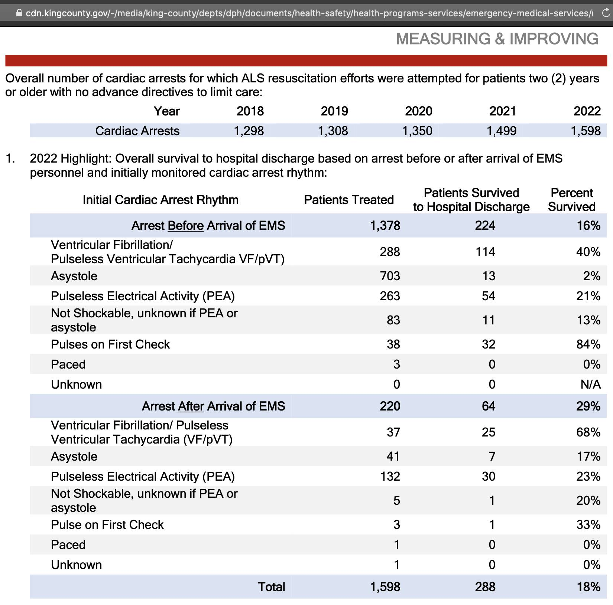
The authors seem to have calculated the number of cardiac arrest deaths by multiplying the figure for the "number of cardiac arrests for which ALS resuscitation efforts were attempted" with the rounded percentage of people who didn't survive until they were discharged from hospital alive, which gave them a figure of 1121 deaths in 2020 (from 1350*(100-17)/100)). However the authors could've derived the exact figure by simply subtracting the number of patients who survived to hospital discharge from the number of treated patients (1350-234 = 1116).
The authors also incorrectly entered the survival rate in 2021 as 18% even though it should've been 16%, but I didn't find other errors in their Table 1 when I compared it to the original PDF reports:
| Hulscher Table 1 | Original PDFs | |||||
|---|---|---|---|---|---|---|
| Year | Treated | Survived | Dead | Treated | Survived | Dead |
| 2005 | 1124 | 190 (17%) | 934 | |||
| 2006 | 993 | 174 (18%) | 819 | |||
| 2007 | 1035 | 191 (18%) | 844 | |||
| 2008 | 1046 | 199 (19%) | 847 | |||
| 2009 | 1072 | 206 (19%) | 866 | |||
| 2010 | 1069 | 218 (20%) | 851 | |||
| 2011 | 1047 | 223 (21%) | 824 | |||
| 2012 | 1134 | 252 (22%) | 882 | |||
| 2013 | 1135 | 235 (21%) | 900 | |||
| 2014 | 1246 | 267 (21%) | 979 | |||
| 2015 | 1114 | 20% | 891 | 1114 | 221 (20%) | 893 |
| 2016 | 1228 | 24% | 933 | 1228 | 288 (24%) | 940 |
| 2017 | 1215 | 21% | 960 | 1215 | 251 (21%) | 964 |
| 2018 | 1298 | 22% | 1012 | 1298 | 289 (22%) | 1009 |
| 2019 | 1308 | 19% | 1059 | 1308 | 253 (19%) | 1055 |
| 2020 | 1350 | 17% | 1121 | 1350 | 234 (17%) | 1116 |
| 2021 | 1499 | 18% | 1229 | 1499 | 242 (16%) | 1257 |
| 2022 | 1598 | 18% | 1310 | 1588 | 288 (18%) | 1300 |
| 2023 | 1697 * | 18% * | 1392 * | 1669 | 311 (19%) | 1358 |
The cells for 2023 above are marked with an asterisk because Hulscher et al. calculated them as a linear projection of the data for 2021 and 2022. In the real data for 2023 that was published in September 2024, the number of deaths was slightly lower than Hulscher's projected number of deaths for 2023:
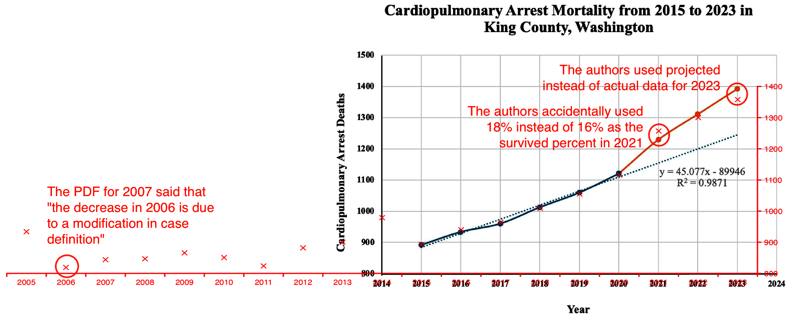
I think the authors should've just omitted 2023 from their paper instead of including projected data for 2023, or in their plots they should've somehow visually differentiated the projected data from the actual data. Many people tweeted a screenshot of one of their figures where it wasn't indicated anywhere that the data for 2023 was projected.
The original PDF reports go back to 2003 but reports for data before 2005 are missing the table which shows the number of treated and survived cardiac patients. Hulscher et al. only included data from 2015 onwards, which might be because there was a big jump down in the number of deaths between 2014 and 2015. I didn't find any explanation for the jump in the report for 2016 which featured the data for 2015. I don't know if it's because there was a high number of deaths in 2014, or if for example before 2015 the King County EMS used to serve more parts of the Seattle metropolitan area outside of King County, or if there was a change to case definition.
The PDF report for the year 2007 said that "the decrease in 2006 is due to a modification in case definition": [https://cdn.kingcounty.gov/-/media/king-county/depts/dph/documents/health-safety/health-programs-services/emergency-medical-services/reports/2007-annual-report.pdf]
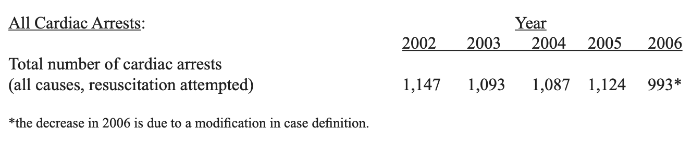
I'm not a fan of using z-scores to express the level of excess deaths, because people don't know how to interpret them correctly, and I think it's clearer to just express excess deaths as a percentage of the baseline. The z-scores can often change drastically depending on the range of years used for the baseline fitting period. In the King County cardiac arrest data the years 2015 to 2020 all fall close to the baseline but 2014 is far from the baseline, so here when I used a 2014-2020 baseline instead of a 2015-2020 baseline, my z-score for excess deaths in 2021 fell from about 13.2 to about 4.7:
> d=data.table(year=2005:2023) > d$dead=c(934,819,844,847,866,851,824,882,900,979,893,940,964,1009,1055,1116,1257,1300,1358) > d$base1=d[year%in%2015:2020,predict(lm(dead~year),d)] > d$base2=d[year%in%2014:2020,predict(lm(dead~year),d)] > d[year==2021,dead-base1]/d[year%in%2015:2020,mean(abs(dead-base1))] [1] 13.24 > d[year==2021,dead-base2]/d[year%in%2014:2020,mean(abs(dead-base2))] [1] 4.662179
But anyway, the long-term trend in the number of deaths in the EMS data seems to be curved upwards, so here my excess number of deaths relative to the 2015-2020 linear baseline was even higher in 2010 than in 2021 or 2022:
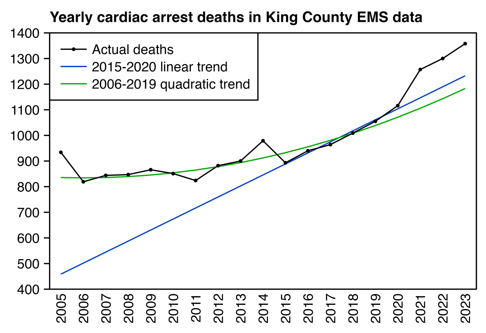
library(data.table);library(ggplot2)
d=data.table(x=2005:2023)
d$y=c(934,819,844,847,866,851,824,882,900,979,893,940,964,1009,1055,1116,1257,1300,1358)
d$z="Actual deaths"
p1=d[,.(x,y=d[x%in%2015:2020,predict(lm(y~x),d)],z="2015-2020 linear trend")]
p2=d[,.(x,y=d[x%in%2006:2019,predict(lm(y~poly(x,2)),d)],z="2006-2019 quadratic trend")]
p=rbind(d,p1,p2)[,z:=factor(z,unique(z))]
ybreak=pretty(p$y,9);xstart=min(p$x);xend=max(p$x)
color=c("black",hsv(22/36,1,.8),"#00aa00")
ggplot(p,aes(x,y))+
geom_line(aes(color=z),linewidth=.3)+
geom_point(aes(alpha=z,color=z),stroke=0,size=.9)+
geom_line(data=p[z==z[1]],aes(color=z),linewidth=.3)+
labs(x=NULL,y=NULL,title="Yearly cardiac arrest deaths in King County EMS data")+
scale_x_continuous(limits=c(xstart-.5,xend+.5),breaks=xstart:xend)+
scale_y_continuous(limits=range(ybreak),breaks=ybreak)+
scale_color_manual(values=color)+
scale_alpha_manual(values=c(1,0,0))+
coord_cartesian(clip="off",expand=F)+
theme(axis.text=element_text(size=7,color="black"),
axis.text.x=element_text(angle=90,vjust=.5,hjust=1),
axis.ticks=element_line(linewidth=.3,color="black"),
axis.ticks.length=unit(3,"pt"),
axis.ticks.length.x=unit(0,"pt"),
legend.background=element_blank(),
legend.box.background=element_rect(linewidth=.3),
legend.justification=c(0,1),
legend.key=element_blank(),
legend.key.height=unit(9,"pt"),
legend.key.width=unit(17,"pt"),
legend.margin=margin(4,4,4,4),
legend.position=c(0,1),
legend.spacing.x=unit(1,"pt"),
legend.spacing.y=unit(0,"pt"),
legend.text=element_text(size=7,vjust=.5),
legend.title=element_blank(),
panel.background=element_blank(),
panel.border=element_rect(fill=NA,linewidth=.3),
panel.grid.major=element_blank(),
plot.margin=margin(5,5,5,5),
plot.subtitle=element_text(size=7,margin=margin(,,4)),
plot.title=element_text(size=7.6,face=2,margin=margin(1,,4)))
ggsave("1.png",width=3.5,height=2.4,dpi=400*4)
system("mogrify -resize 25% 1.png")
The long-term trend in all-cause deaths in King County seems to be similarly curved upwards, even though the trend in the 10 years before COVID seemed roughly linear:
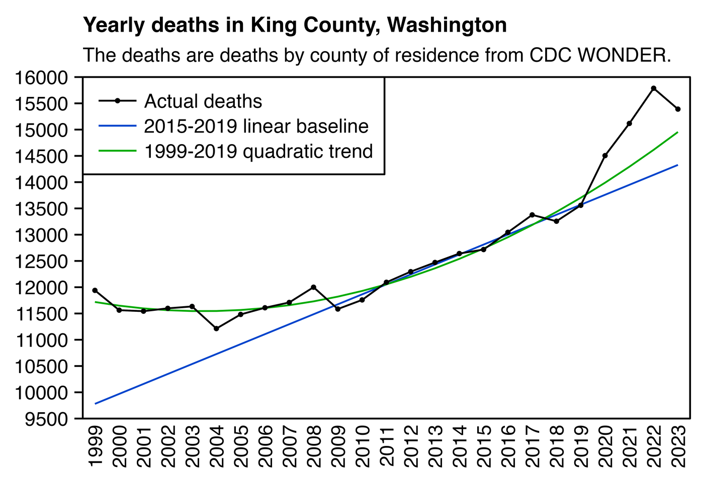
library(data.table);library(ggplot2)
t=fread("http://sars2.net/f/wonderkingcountyallcause.csv")
t=merge(t[year%in%2010:2019,.(year=1999:2023,base=predict(lm(dead/pop~year),.(year=1999:2023))),age],t)
a=t[,.(dead=sum(dead)),year]
a$linear=a[year%in%2015:2019,predict(lm(dead~year),a)]
a$quadra=a[year<2020,predict(lm(dead~poly(year,2)),a)]
p=a[,.(x=year,y=unlist(.SD[,-1]),z=rep(c("Actual deaths","2015-2019 linear baseline","1999-2019 quadratic trend"),each=.N))]
p[,z:=factor(z,unique(z))]
ybreak=pretty(p$y,9);xstart=1999;xend=2023
color=c("black",hsv(22/36,1,.8),"#00aa00")
ggplot(p,aes(x,y))+
geom_line(aes(color=z),linewidth=.3)+
geom_point(aes(alpha=z,color=z),stroke=0,size=.9)+
geom_line(data=p[z==z[1]],aes(color=z),linewidth=.3)+
labs(x=NULL,y=NULL,title="Yearly deaths in King County, Washington")+
scale_x_continuous(limits=c(xstart-.5,xend+.5),breaks=xstart:xend)+
scale_y_continuous(limits=range(ybreak),breaks=ybreak)+
scale_color_manual(values=color)+
scale_alpha_manual(values=c(1,0,0))+
coord_cartesian(clip="off",expand=F)+
theme(axis.text=element_text(size=7,color="black"),
axis.text.x=element_text(angle=90,vjust=.5,hjust=1),
axis.ticks=element_line(linewidth=.3,color="black"),
axis.ticks.length=unit(3,"pt"),
axis.ticks.length.x=unit(0,"pt"),
legend.background=element_blank(),
legend.box.background=element_rect(linewidth=.3),
legend.justification=c(0,1),
legend.key=element_blank(),
legend.key.height=unit(9,"pt"),
legend.key.width=unit(17,"pt"),
legend.position=c(0,1),
legend.margin=margin(4,4,4,4),
legend.spacing.x=unit(1,"pt"),
legend.spacing.y=unit(0,"pt"),
legend.text=element_text(size=7,vjust=.5),
legend.title=element_blank(),
panel.background=element_blank(),
panel.border=element_rect(fill=NA,linewidth=.3),
panel.grid.major=element_blank(),
plot.margin=margin(5,5,5,5),
plot.subtitle=element_text(size=7,margin=margin(,,4)),
plot.title=element_text(size=7.6,face=2,margin=margin(1,,4)))
ggsave("1.png",width=3.5,height=2.7,dpi=400*4)
system("mogrify -resize 25% 1.png")
The EMS data included all cardiac arrest deaths regardless of cause, so it's similar to deaths by multiple cause of death at CDC WONDER. So part of the excess deaths in 2021 and 2022 might be due to COVID, because from the next plot which shows monthly cardiac deaths in Washington State, you can see that spikes in MCD cardiac deaths coincided with COVID waves, and the number of excess MCD cardiac deaths got much lower when I subtracted deaths that also had MCD COVID:
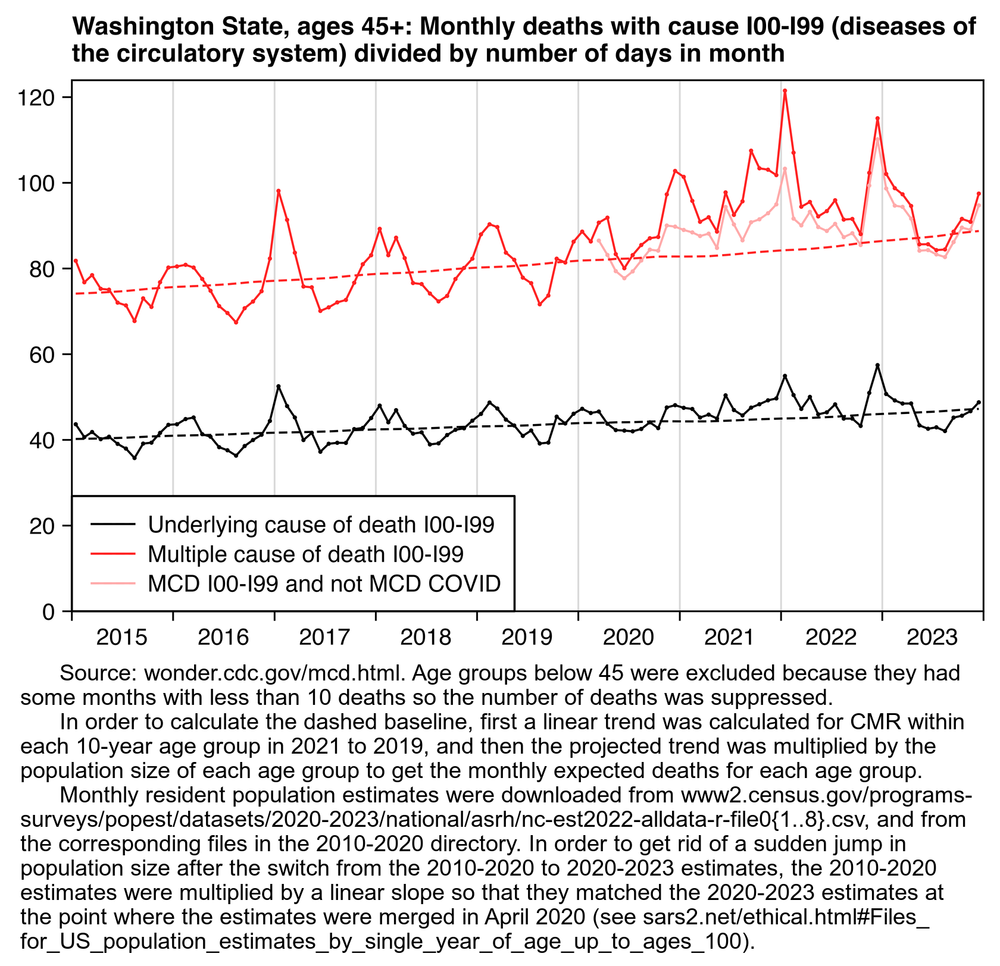
library(data.table);library(ggplot2);library(lubridate);library(ggtext)
cul=\(x,y)y[cut(x,c(y,Inf),,T,F)]
t=fread("http://sars2.net/f/wonderwashingtoncardiac.csv")[age>=45]
pop=fread("http://sars2.net/f/uspopdeadmonthly.csv")
t=merge(t,pop[,.(pop=sum(pop)),.(month=date,age=cul(age,seq(45,85,10)))])
t=t[,month:=as.Date(paste0(month,"-1"))]
t[,dead:=dead/days_in_month(month)]
months=sort(unique(t$month))
base=t[!grepl("COVID",cause)&year(month)%in%2011:2019][,dead:=nafill(dead,,0)]
t=merge(base[,.(month=months,base=predict(lm(dead/pop~month),.(month=months))),.(age,cause)],t)
t[,base:=base*pop]
p=t[,.(base=sum(base),dead=sum(dead)),.(date=month,cause)]
and=fread("http://sars2.net/f/wonderwashingtoncardiacandcovid.csv")
and=and[,date:=as.Date(paste0(month,"-1"))][,.(date,andcovid=dead/days_in_month(date))]
p=rbind(p,merge(and,p[cause%like%"Multiple"])[,.(date,base=NA,cause="MCD I00-I99 and not MCD COVID",dead=dead-andcovid)])
p[,cause:=factor(cause,unique(cause)[c(2,1,3)])]
xstart=as.Date("2015-1-1");xend=as.Date("2024-1-1")
p=p[date>=xstart&date<=xend]
xbreak=seq(xstart,xend,"6 month");xlab=c(rbind("",2015:2023),"")
ystart=0;yend=p[,max(base,dead,0,na.rm=T)*1.02];ybreak=pretty(p[,c(base,dead,0)],8)
color=c("black","#ff2222","#ffaaaa")
lab=c("Actual deaths","Baseline");lab=factor(lab,unique(lab))
ggplot(p,aes(x=date+14,y=dead,color=cause))+
geom_vline(xintercept=seq(xstart,xend,"year"),color="gray85",linewidth=.25)+
geom_hline(yintercept=c(ystart,yend),linewidth=.25,lineend="square")+
geom_vline(xintercept=c(xstart,xend),linewidth=.25,lineend="square")+
geom_line(linewidth=.3)+
geom_point(stroke=0,size=.6,show.legend=F)+
geom_line(aes(y=base),linetype="42",linewidth=.3)+
labs(title="Washington State, ages 45+: Monthly deaths with cause I00-I99 (diseases of\nthe circulatory system) divided by number of days in month",x=NULL,y=NULL)+
scale_x_continuous(limits=c(xstart,xend),breaks=xbreak,labels=xlab)+
scale_y_continuous(limits=c(ystart,yend),breaks=ybreak)+
scale_color_manual(values=color)+
scale_linetype_manual(values=c("solid","42"),labels=lab)+
coord_cartesian(clip="off",expand=F)+
theme(axis.text=element_text(size=7,color="black"),
axis.ticks.x=element_line(color=alpha("black",c(1,0))),
axis.ticks=element_line(linewidth=.25,color="black"),
axis.ticks.length=unit(.2,"lines"),
axis.title=element_text(size=8),
legend.background=element_blank(),
legend.box.just="left",
legend.spacing=unit(5,"pt"),
legend.justification=c(0,0),
legend.key=element_blank(),
legend.key.height=unit(9,"pt"),
legend.key.width=unit(17,"pt"),
legend.position=c(0,0),
legend.spacing.x=unit(2,"pt"),
legend.spacing.y=unit(0,"pt"),
legend.box.background=element_rect(fill="white",color="black",linewidth=.3),
legend.margin=margin(4,4,4,4,"pt"),
legend.text=element_text(size=7,vjust=.5),
legend.title=element_blank(),
panel.background=element_blank(),
plot.margin=margin(5,5,5,5),
plot.title=element_text(size=7.6,face=2,margin=margin(,,4)))
ggsave("1.png",width=4.2,height=2.8,dpi=400*4)
sub="\u00a0 Source: wonder.cdc.gov/mcd.html. Age groups below 45 were excluded because they had some months with less than 10 deaths so the number of deaths was suppressed.
In order to calculate the dashed baseline, first a linear trend was calculated for CMR within each 10-year age group in 2021 to 2019, and then the projected trend was multiplied by the population size of each age group to get the monthly expected deaths for each age group.
Monthly resident population estimates were downloaded from www2.census.gov/programs-
surveys/popest/datasets/2020-2023/national/asrh/nc-est2022-alldata-r-file0{1..8}.csv, and from the corresponding files in the 2010-2020 directory. In order to get rid of a sudden jump in population size after the switch from the 2010-2020 to 2020-2023 estimates, the 2010-2020 estimates were multiplied by a linear slope so that they matched the 2020-2023 estimates at the point where the estimates were merged in April 2020 (see sars2.net/ethical.html#Files_
for_US_population_estimates_by_single_year_of_age_up_to_ages_100)."
system(paste0("f=1.png;magick 1.png -resize 25% 1.png;mar=32;w=`identify -format %w $f`;magick \\( $f -gravity southwest -chop 0x20 \\) \\( -size $[w-mar*2]x -font Arial -interline-spacing -3 -pointsize 38 caption:'",sub,"' -gravity southwest -splice $[mar]x20 \\) -append 1.png"))
The paper by Hulscher et al. showed that there was a much higher number of excess deaths in 2021 than 2020. However compared to other US states, Washington State had an unusually low number of COVID deaths in 2020 relative to 2021 and 2022, and the PCR positivity rate in Washington State was also low in 2020:
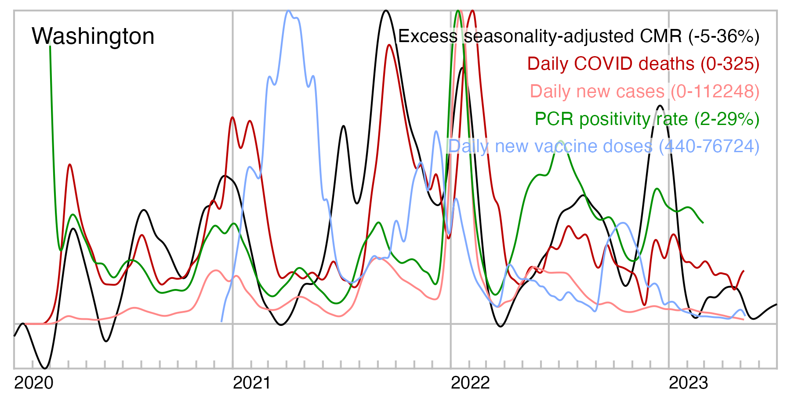
The plot above is based on these datasets: https://data.cdc.gov/NCHS/Excess-Deaths-Associated-with-COVID-19/xkkf-xrst/about_data, https://data.cdc.gov/Case-Surveillance/Weekly-United-States-COVID-19-Cases-and-Deaths-by-/pwn4-m3yp/about_data, https://healthdata.gov/dataset/COVID-19-Diagnostic-Laboratory-Testing-PCR-Testing/j8mb-icvb/about_data, https://data.cdc.gov/Vaccinations/COVID-19-Vaccination-Trends-in-the-United-States-N/rh2h-3yt2/about_data.
Washington State is one of the states with the highest percentage of UCD COVID deaths in 2021 and 2022 relative to UCD COVID deaths in 2020:
> t=fread("http://sars2.net/f/wonderstatecovidvsall.csv")[cause=="covid"]
> a=merge(t[year==2020,.(dead,state)],t[year%in%2021:2022,sum(dead),state])
> a[,.(state,pct=V1/dead*100,`2021+2022`=V1,`2020`=dead)][order(-pct)][,pct:=round(pct,1)][]|>print(r=F)
state pct 2021+2022 2020
Maine 506.9 2129 420
Alaska 446.5 1027 230
Oregon 388.8 5583 1436
West Virginia 369.0 5476 1484
Vermont 346.5 499 144
Hawaii 331.3 1133 342
Wyoming 285.1 1317 462
Kentucky 279.3 11542 4133
Washington 254.9 8370 3284 # Washington State is 9th highest
Tennessee 253.2 17311 6838
North Carolina 252.0 19888 7892
Florida 242.9 46724 19237
South Carolina 238.6 12590 5277
Idaho 237.9 3231 1358
Utah 236.3 3225 1365
Virginia 235.7 13723 5822
Georgia 227.1 21470 9456
Nevada 226.9 7347 3238
New Hampshire 221.7 1727 779
Oklahoma 220.5 10692 4848
Arizona 205.0 17315 8447
Ohio 203.0 27621 13607
Alabama 199.7 13068 6544
California 198.0 62044 31338
Arkansas 194.6 6854 3523
Texas 191.6 59092 30844
Montana 187.0 2092 1119
New Mexico 181.9 5167 2841
Colorado 175.1 7559 4316
Michigan 172.1 19608 11391
Delaware 171.8 1732 1008
Kansas 169.5 5667 3344
Missouri 169.2 12081 7138
Mississippi 165.3 7383 4467
Pennsylvania 162.1 26916 16609
Indiana 154.1 13142 8529
Wisconsin 149.8 8140 5434
Maryland 139.1 8344 6000
Louisiana 133.0 8691 6534
Minnesota 129.2 6741 5218
Nebraska 120.7 2467 2044
Illinois 118.1 18581 15735
Iowa 111.0 4812 4336
Rhode Island 95.5 1514 1585
New York 91.8 32804 35736
Massachusetts 86.3 8043 9319
District of Columbia 83.0 690 831
South Dakota 82.2 1229 1496
Connecticut 82.0 4744 5782
New Jersey 81.0 13370 16498
North Dakota 80.0 968 1210
state pct 2021+2022 2020
This shows how in the year 2020 deaths with UCD COVID accounted for only about 5% of all deaths in Washington State, which was one of the lowest percentages out of any state:
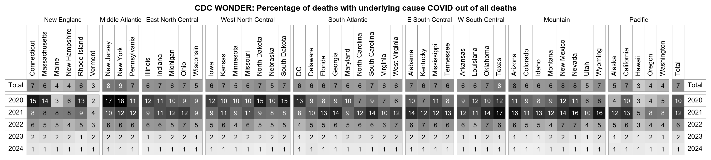
library(data.table);library(ComplexHeatmap);library(circlize)
t=fread("http://sars2.net/f/wonderstatecovidvsall.csv")[year>=2020][,year:=factor(year,unique(year))]
t=rbind(t[,.(dead=sum(dead),year="Total"),.(cause,state)],t)
t=rbind(t,t[,.(dead=sum(dead),state="Total"),.(cause,year)])
me=merge(t[cause=="covid",.(year,state,covid=dead)],t[cause=="all",.(year,state,dead)])
m=me[,xtabs(covid/dead*100~year+state)]
states=fread("https://github.com/cphalpert/census-regions/raw/master/us%20census%20bureau%20regions%20and%20divisions.csv")
states[,order:=match(Division,strsplit("Total,New England,Middle Atlantic,East North Central,West North Central,South Atlantic,East South Central,West South Central,Mountain,Pacific",",")[[1]])]
states[,Division:=sub("([WE]).* (South Central)","\\1 \\2",Division)]
div=rbind(states[order(order),.(State,Division)],list(State="Total",Division=""))
m=m[,div$State];disp=round(m)
colnames(m)[colnames(m)=="District of Columbia"]="DC"
png("0.png",w=ncol(m)*32+2000,h=nrow(m)*32+1000,res=120)
ht_opt$COLUMN_ANNO_PADDING=unit(0,"mm");ht_opt$ROW_ANNO_PADDING=unit(0,"mm")
Heatmap(m,
column_split=factor(div$Division,unique(div$Division)),
row_split=rep(letters[1:2],c(1,5)),
row_title=NULL,
column_title_gp=gpar(fontsize=16),
column_gap=unit(8,"pt"),
row_gap=unit(8,"pt"),
border="gray60",
width=unit(ncol(m)*32,"pt"),
height=unit(nrow(m)*32,"pt"),
show_column_names=F,
show_row_names=F,
cluster_columns=F,
cluster_rows=F,
show_heatmap_legend=F,
rect_gp=gpar(col="gray80",lwd=0),
top_annotation=columnAnnotation(text=anno_text(gt_render(colnames(m),padding=unit(c(3,3,3,3),"mm")),just="left",rot=90,location=unit(0,"npc"),gp=gpar(fontsize=17,border="gray60",lwd=1))),
left_annotation=rowAnnotation(text=anno_text(gt_render(rownames(m),padding=unit(c(3,3,3,3),"mm")),just="right",location=unit(1,"npc"),gp=gpar(fontsize=17,border="gray60",lwd=1))),
right_annotation=rowAnnotation(text=anno_text(gt_render(rownames(m),padding=unit(c(3,3,3,3),"mm")),just="left",location=unit(0,"npc"),gp=gpar(fontsize=17,border="gray60",lwd=1))),
col=colorRamp2(seq(0,max(m),,256),sapply(seq(1,0,,256),\(i)rgb(i,i,i))),
cell_fun=\(j,i,x,y,w,h,fill)grid.text(round(disp[i,j]),x,y,gp=gpar(fontsize=16,col=ifelse(abs(m[i,j])>=.45*max(m),"white","black"))))
dev.off()
system("mogrify -trim 0.png;magick -gravity north -font Arial-Bold \\( -size `identify -format %w 0.png`x -pointsize 34 caption:'CDC WONDER: Percentage of deaths with underlying cause COVID out of all deaths' \\) \\( 0.png -splice 0x18 \\) -append -trim -bordercolor white -border 20 1.png")
The paper by Hulscher et al. also included this plot which showed that the mid-year resident population estimates of King County decreased by about 0.94% between 2020 and 2021:
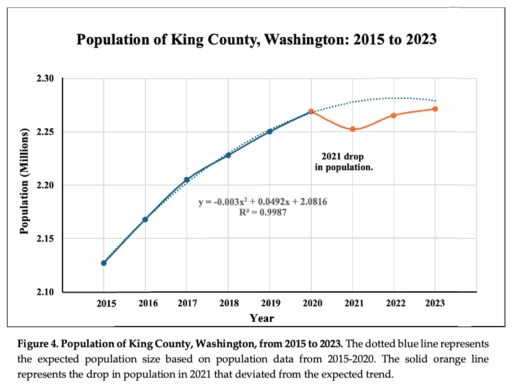
Hulscher et al. wrote that they used population estimates published by the US Census Bureau and cited this URL as their source: https://www2.census.gov/programs-surveys/popest/tables/. Uncle John Returns pointed out that the drop in population size between 2020 and 2021 was missing from the Population Interim Estimates (PIE) published by the Washington State Department of Health: [https://x.com/UncleJo46902375/status/1855602491083161778]
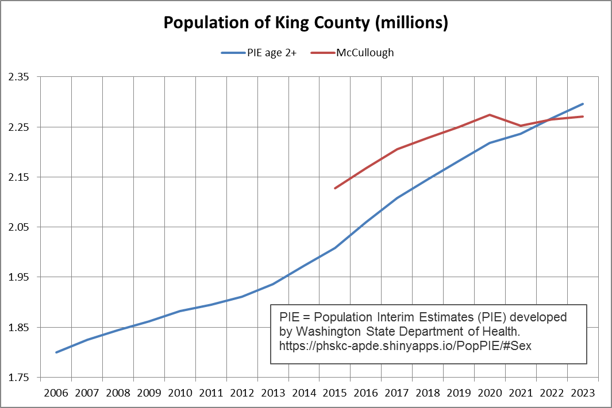
From the R code of the Population Interim Estimates, I found that the population estimates for 2020 to 2023 were taken from a dataset published by the Washington State Office of Financial Management (OFM). [https://github.com/PHSKC-APDE/frankenpop_pub/blob/main/rake_and_output%2eR, https://ofm.wa.gov/washington-data-research/population-demographics/population-estimates/estimates-april-1-population-age-sex-race-and-hispanic-origin] The OFM estimates also had a bigger increase in population size between 2022 and 2023 than the Census Bureau estimates:
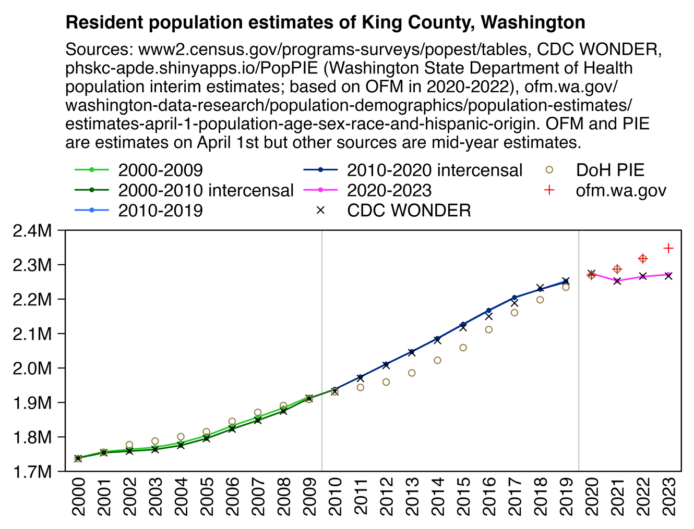
dlf=\(x,y,...){if(missing(y))y=sub(".*/","",x);for(i in 1:length(x))download.file(x[i],y[i],quiet=T,...)}
dlf("https://www2.census.gov/programs-surveys/popest/tables/2020-2023/counties/totals/co-est2023-pop-53.xlsx")
dlf("https://www2.census.gov/programs-surveys/popest/tables/2010-2020/intercensal/county/co-est2020int-pop-53.xlsx")
dlf("https://www2.census.gov/programs-surveys/popest/tables/2010-2019/counties/totals/co-est2019-annres-53.xlsx")
dlf("https://www2.census.gov/programs-surveys/popest/tables/2000-2010/intercensal/county/co-est00int-01-53.csv")
dlf("https://www2.census.gov/programs-surveys/popest/tables/2000-2009/counties/totals/co-est2009-01-53.csv")
dlf("https://www2.census.gov/programs-surveys/popest/tables/2000-2010/intercensal/county/co-est00int-01-53.csv")
library(data.table);library(ggplot2);library(readxl)
agecut=\(x,y)cut(x,c(y,Inf),paste0(y,c(paste0("-",y[-1]-1),"+")),T,F)
kim=\(x)ifelse(x>=1e3,ifelse(x>=1e6,paste0(x/1e6,"M"),paste0(x/1e3,"k")),x)
pop1=fread("co-est2009-01-53.csv",skip=1)
p=pop1[V1==".King County",.(year=2009:2000,pop=as.integer(gsub(",","",.SD)),z="2000-2009"),.SDcols=2:11]
pop2=fread("co-est00int-01-53.csv",skip=1)
p=rbind(p,pop2[V1==".King County",.(year=2000:2010,pop=as.integer(gsub(",","",.SD)),z="2000-2010 intercensal"),.SDcols=c(3:12,14)])
pop3=read_excel("co-est2019-annres-53.xlsx")
p=rbind(p,list(year=2010:2019,pop=as.integer(dplyr::filter(pop3,pop3[[1]]==".King County, Washington")[4:13]),z="2010-2019"))
pop4=read_excel("co-est2020int-pop-53.xlsx")
p=rbind(p,list(year=2010:2019,pop=as.integer(pop4[pop4[[1]]%like%"King",3:12]),z="2010-2020 intercensal"))
pop5=read_excel("co-est2023-pop-53.xlsx")
p=rbind(p,list(year=2020:2023,pop=as.integer(pop5[pop5[[1]]%like%"King",][3:6]),z="2020-2023"))
p=rbind(p,data.table(year=1999:2023,pop=c(1729058,1737034,1754090,1758685,1763440,1775297,1795268,1822967,1847986,1875020,1912012,1931249,1969722,2007440,2044449,2079967,2117125,2149970,2188649,2233163,2252782,2274315,2252305,2266789,2266789),z="CDC WONDER"))
p=rbind(p,data.table(year=2000:2022,pop=c(1737045.79,1755487.08,1777514.01,1788082.03,1800783.04,1814999.24,1845208.98,1871097.95,1891124.97,1909204.99,1931249,1943608.44,1959305.04,1985687.59,2022469.68,2059056.02,2111487.04,2160624.39,2198063.56,2234581.41,2269674.95,2287050.05,2317700.05),z="DoH PIE"))
p=rbind(p,list(year=2020:2023,pop=c(2269675,2287050,2317700,2347800),z="ofm.wa.gov"))
# p=rbind(p,list(year=2015:2022,pop=c(2.127,2.168,2.205,2.228,2.250,2.274,2.252,2.265)*1e6,z="Hulscher et al."))
p[,z:=factor(z,unique(z))]
xstart=2000;xend=2023
p=p[year%in%xstart:xend]
ybreak=pretty(p$pop);ystart=ybreak[1];yend=max(ybreak);ylab=sprintf("%.1fM",ybreak/1e6)
ggplot(p,aes(x=year,y=pop))+
coord_cartesian(clip="off",expand=F)+
geom_vline(xintercept=c(2009.5,2019.5),color="gray80",linewidth=.23)+
geom_line(aes(color=z,alpha=z),linewidth=.3)+
geom_point(aes(color=z,shape=z,size=z),stroke=.3)+
labs(title="Resident population estimates of King County, Washington",subtitle="Sources: www2.census.gov/programs-surveys/popest/tables, CDC WONDER,
phskc-apde.shinyapps.io/PopPIE (Washington State Department of Health
population interim estimates; based on OFM in 2020-2022), ofm.wa.gov/
washington-data-research/population-demographics/population-estimates/
estimates-april-1-population-age-sex-race-and-hispanic-origin. OFM and PIE
are estimates on April 1st but other sources are mid-year estimates.",x=NULL,y=NULL)+
scale_x_continuous(limits=c(xstart-.5,xend+.5),breaks=seq(xstart-.5,xend+.5,.5),labels=c(rbind("",xstart:xend),""))+
scale_y_continuous(labels=ylab,breaks=ybreak,limits=c(ystart,yend))+
scale_color_manual(values=c(hsv(12/36,c(.8,1),c(.8,.4)),hsv(22/36,c(.8,1),c(1,.5)),hsv(30/36,.8,1),"black",hsv(4/36,.5,.6),"red"))+
scale_shape_manual(values=c(16,16,16,16,16,4,1,3))+
scale_alpha_manual(values=c(1,1,1,1,1,0,0,0))+
scale_size_manual(values=c(.7,.7,.7,.7,.7,1,1,1))+
guides(color=guide_legend(nrow=3,byrow=F))+
theme(axis.text=element_text(size=7,color="black"),
axis.text.x=element_text(angle=90,vjust=.5,hjust=1),
axis.ticks=element_line(linewidth=.2,color="black"),
axis.ticks.length=unit(3,"pt"),
axis.ticks.length.x=unit(0,"pt"),
legend.background=element_blank(),
legend.box.spacing=unit(0,"pt"),
legend.justification="left",
legend.key=element_blank(),
legend.key.height=unit(8,"pt"),
legend.key.width=unit(17,"pt"),
legend.margin=margin(,,4),
legend.position="top",
legend.spacing.x=unit(2,"pt"),
legend.spacing.y=unit(1,"pt"),
legend.text=element_text(size=7,vjust=.5),
legend.title=element_blank(),
panel.background=element_blank(),
panel.border=element_rect(fill=NA,linewidth=.23),
plot.margin=margin(5,5,5,5),
plot.subtitle=element_text(size=6.8,margin=margin(,,3)),
plot.title=element_text(size=7.3,face=2,,margin=margin(1,,4)))
ggsave("1.png",width=3.8,height=2.9,dpi=350*4)
system("magick 1.png -resize 25% 1.png")
I don't know if the OFM population estimates are more accurate than the Census Bureau's population estimates or not. At first I thought that a large decrease in population size between mid-2020 and mid-2021 wasn't supported by data for births minus deaths plus net migration. On CDC WONDER I got 23,256 births and 14,779 deaths between July 2020 and June 2021 among residents of King County. [https://wonder.cdc.gov/natality-expanded-current.html, https://wonder.cdc.gov/mcd.html]
There's a discontinued Census Bureau dataset for migration by county which includes data up to the year 2020, where King County had an estimated net migration of -6,437 people in the year 2020: [https://fred.stlouisfed.org/series/NETMIGNACS053033]
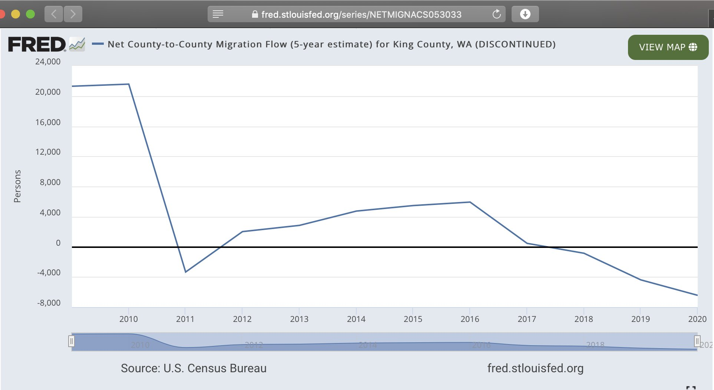
Assuming the same net migration between mid-2020 and mid-2021, 23256-14779-6437 would give 2,040 more people in mid-2021 than mid-2020, which is a much smaller increase than in the OFM population estimates where there's 17,375 more people in 2021 than 2020. (The OFM population estimates are for April 1st and not July 1st, but it shouldn't make much difference when you're comparing the difference between two adjacent years.)
However later I found that the Census Bureau has published net migration estimates by county here in the file co-est2021-comp-53.xlsx: https://www2.census.gov/programs-surveys/popest/tables/2020-2021/counties/totals/. In the file King County had a total population change of -20,266 between July 1st 2020 and July 1st 2021, where there were 23,082 births, 16,444 deaths, and net migration of -26,818. So if the net migration estimate is accurate, then it would explain a large decrease in population size between mid-2020 and mid-2021.
Peter McCullough wrote that their paper showed that excess deaths had increased by 1236%: [https://x.com/P_McCulloughMD/status/1857107751756845319]
The paper said: "Excess cardiopulmonary arrest deaths were estimated to have increased by 1,236% from 2020 to 2023, rising from 11 excess deaths (95% CI: -12, 34) in 2020 to 147 excess deaths (95% CI: 123, 170) in 2023." I think it was misleading that McCullough's headline was not even based on actual data but on a projected number of deaths for 2023.
But anyway there were about 11.8% excess deaths in 2023 (1392/1245-1) and about 1.0% excess deaths in 2020 (1121/1110-1). So I guess an increase of 1236% sounds more exciting than an increase of 10.8 percentage points:
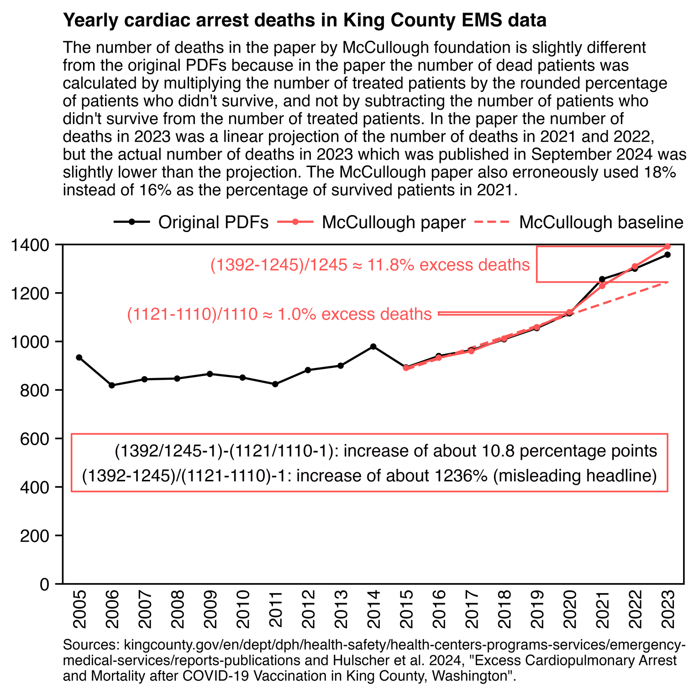
library(data.table);library(ggplot2)
d=data.table(year=2005:2023)
d$dead=c(934,819,844,847,866,851,824,882,900,979,893,940,964,1009,1055,1116,1257,1300,1358)
d$dead2=c(rep(NA,10),891,933,960,1012,1059,1121,1229,1310,1392)
d$base=c(rep(NA,10),884,929,974,1019,1064,1110,1155,1200,1245)
p=d[,.(x=year,y=c(dead,dead2,base),z=rep(c("Original PDFs","McCullough paper","McCullough baseline"),each=.N))]
p[,z:=factor(z,unique(z))]
anno=p[x%in%c(2020,2023)&z!=z[1]]
minus=4
seg=as.matrix(anno[,.(x=x-minus,xend=x,y,yend=y)])
seg=rbind(seg,t(matrix(t(anno[order(x)][,x:=x-minus][,-3]),4))[,c(1,3,2,4)])
lab=cbind(anno[1:2,1:2],base=anno[3:4][[2]])
lab=lab[,.(x,y=(y+base)/2,label=paste0("(",y," - ",base,") / ",base," ≈ ",sprintf("%.1f",(y/base-1)*100),"% excess deaths"))]
note="(1392/1245-1)-(1121/1110-1): increase of about 10.8 percentage points
(1392-1245)/(1121-1110)-1: increase of about 1236% (misleading headline)"
xstart=2005;xend=2023;ybreak=pretty(c(0,p$y),7);ystart=0;yend=max(ybreak)
xbreak=seq(xstart-.5,xend+.5,.5);xlab=ifelse(xbreak%%1==0,xbreak,"")
color=c("black","#ff5555","#ff5555")
cap="Sources: kingcounty.gov/en/dept/dph/health-safety/health-centers-programs-services/emergency-
medical-services/reports-publications, Hulscher et al. 2024, \"Excess Cardiopulmonary Arrest and
Mortality after COVID-19 Vaccination in King County, Washington\"."
sub=str_wrap("The number of deaths in the paper by McCullough foundation is slightly different from the original PDFs because in the paper the number of dead patients was calculated by multiplying the number of treated patients by the rounded percentage of patients who didn't survive, and not by subtracting the number of patients who didn't survive from the number of treated patients. In the paper the number of deaths in 2023 was a linear projection of the number of deaths in 2021 and 2022, but the actual number of deaths in 2023 which was published in September 2024 was slightly lower than the projection. The McCullough paper also erroneously used 18% instead of 16% as the percentage of survived patients in 2021.",80)
ggplot(p,aes(x,y))+
geom_hline(yintercept=c(0,yend),linewidth=.3,lineend="square")+
geom_vline(xintercept=c(xstart-.5,xend+.5),linewidth=.3,lineend="square")+
geom_line(aes(linewidth=z,color=z,linetype=z))+
geom_segment(data=as.data.frame(seg),aes(x=x,xend=xend,y=y,yend=yend),lineend="square",linewidth=.3,color=color[2])+
geom_text(data=lab,aes(x=x-minus-.2,label=label),hjust=1,color=color[2],size=2.4)+
annotate(geom="label",x=2023,y=500,label=note,hjust=1,color=color[2],label.r=unit(0,"pt"),label.padding=unit(4,"pt"),label.size=.3,size=2.4)+
annotate(geom="label",x=2023,y=500,label=note,hjust=1,fill="transparent",label.r=unit(0,"pt"),label.padding=unit(4,"pt"),label.size=0,size=2.4)+
geom_point(aes(color=z,shape=z,alpha=z,size=z),stroke=.4)+
labs(x=NULL,y=NULL,title="Yearly cardiac arrest deaths in King County EMS data",subtitle=sub,caption=cap)+
scale_x_continuous(limits=c(xstart-.5,xend+.5),breaks=xbreak,labels=xlab)+
scale_y_continuous(limits=c(ystart,yend),breaks=ybreak)+
coord_cartesian(clip="off",expand=F)+
scale_color_manual(values=color)+
scale_linetype_manual(values=c("solid","solid","42"))+
scale_linewidth_manual(values=c(.4,.4,.4))+
scale_shape_manual(values=c(16,16,16))+
scale_size_manual(values=c(.9,.9,1.4))+
scale_alpha_manual(values=c(1,1,0))+
theme(axis.text=element_text(size=7,color="black"),
axis.text.x=element_text(angle=90,vjust=.5,hjust=1),
axis.ticks.length=unit(0,"pt"),
legend.background=element_blank(),
legend.box.spacing=unit(0,"pt"),
legend.direction="horizontal",
legend.justification=c(1,.5),
legend.key=element_blank(),
legend.key.height=unit(10,"pt"),
legend.key.width=unit(18,"pt"),
legend.margin=margin(1,,4),
legend.position="top",
legend.spacing.x=unit(1.5,"pt"),
legend.spacing.y=unit(0,"pt"),
legend.text=element_text(size=7),
legend.title=element_blank(),
panel.background=element_blank(),
plot.margin=margin(4,4,4,4),
plot.subtitle=element_text(size=6.5,margin=margin(,,3)),
plot.caption=element_text(size=5.7,margin=margin(4),hjust=0),
plot.title=element_text(size=7.5,face="bold",margin=margin(1,,4)))
ggsave("1.png",width=3.8,height=3.8,dpi=400*4)
system("magick 1.png -resize 25% 1.png")
Peter Sweden also employed the trick in a Substack post where he said that there had been a 1101% increase in excess deaths in children. [https://skeptics.stackexchange.com/questions/53765/has-there-been-a-1101-increase-in-excess-deaths-among-children-aged-0-14-across] And USMortality used the same trick in one of his Substack posts, where he got about 11.2% excess deaths in 2022 and about 4.5% excess deaths in 2020, so he said there had been a 149% increase in excess deaths (because I guess an increase of 6.7 percentage points wouldn't have sounded as dramatic): [https://x.com/USMortality/status/1721410802857730423]
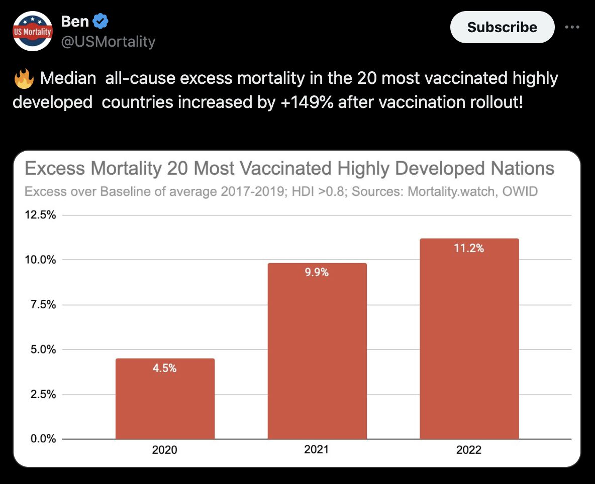
Someone posted this comment to McCullough's Substack: [https://petermcculloughmd.substack.com/p/peer-reviewed-study-reveals-1236/comment/77242096]
It is unlikely that the authors faced any pressure to conform to the mainstream position of being exceedingly avoidant about the possibility of serious harm resulting from the mRNA (Pfizer and Moderna) and adenovirus vector (AstraZeneca and J&J) gene therapy injections falsely marketed and mandated as COVID-19 "vaccines", because this article was not published in a proper peer-reviewed journal.
The same is true of another article, which also likely contains important research, written by Nicholas Hulscher, John Leake and Dr McCullough, on the origins of some bird flu strains: https://petermcculloughmd.substack.com/p/breaking-peer-reviewed-study-finds. See my comment: https://petermcculloughmd.substack.com/p/breaking-peer-reviewed-study-finds/comment/76276072 on how the predatory journal chosen is associated with the well-known predatory publisher Longdom.
A quick search for "Journal of Emergency Medicine: Open Access" finds it is part of the Longdom operation: https://www.longdom.org/emergency-medicine/peer-review-process.html.
If the "Journal of Emergency Medicine: Open Access" was a legitimate, properly peer-reviewed, mainstream journal it would be listed in PubMed, but it is not: https://pmc.ncbi.nlm.nih.gov/journals/. This lists seven journals which have the phrase "Journal of Emergency Medicine" in their titles, but not this one.
The publisher, Opast, is mentioned six times in this recent, mainstream, peer-reviewed journal, report on predatory journals: https://ese.arphahub.com/article/113535/ .
Both Opast and Longdom are listed on Beall's original list of predatory journals: https://beallslist.net and reports like these: https://www.editage.com/insights/my-research-has-been-published-in-a-predatory-journal
https://www.researchgate.net/post/Longdom_Publication_Issue-Is_that_a_Predatory_Publication
https://www.bmj.com/content/384/bmj.q452 (Paywalled, but the PDF is at: http://press.psprings.co.uk/bmj/march/predatoryjournals.pdf)make it clear that Longdom is a predatory publisher. It is a brand of long-established predatory publisher OMICS: https://insights.uksg.org/articles/10.1629/uksg.631.
Hulscher and McCullough also published a paper about H5N1 in a journal called "Poultry, Fisheries & Wildlife Sciences", which is another journal ran by the predatory publisher Longdom. [https://www.longdom.org/open-access/proximal-origin-of-epidemic-highly-pathogenic-avian-influenza-h5n1-clade-2344b-and-spread-by-migratory-1099735.html]
The paper by Hulscher et al. said: "Approximately 98% of the King County population received at least one dose of a COVID-19 vaccine by 2023." The authors took the percentage of vaccinated people from this website: https://data.tennessean.com/covid-19-vaccine-tracker/washing-ton/king-county/53033/. I got an error when I tried to access the website outside of the US, but I was able to access it with a free US VPN server from Proton VPN: https://protonvpn.com. The number of vaccinated people in the dataset seems to be identical to this CDC dataset: https://data.cdc.gov/Vaccinations/COVID-19-Vaccinations-in-the-United-States-County/8xkx-amqh. However the percentage of vaccinated people out of the total population is different. For example on January 4th 2022 the Tennessean dataset has 1,903,416 vaccinated people which matches the CDC data, but it has 87.99% vaccinated people which doesn't match the CDC data:
> t=fread("COVID-19_Vaccinations_in_the_United_States_County_20240227.csv")
> t[Date=="01/04/2022"&FIPS==53033,.(Date,vaxcount=Administered_Dose1_Recip,vaxpoppct=Administered_Dose1_Pop_Pct,pop=Census2019)]
Date vaxcount vaxpoppct pop
1: 01/04/2022 1903416 84.5 2252782 # population is vintage 2019 resident population estimate for mid-2019
I estimated that Tennessean uses a fixed population size of about 2163216 for King County by taking the average value across three different dates for the number of vaccinated people divided by the proportion of vaccinated people:
| Date | Vaccinated people | Vaccinated percent | Estimated population size (from people divided by percent) |
|---|---|---|---|
| 2021-03-22 | 510930 | 23.62 | 2163124 |
| 2022-01-04 | 1903416 | 87.99 | 2163219 |
| 2022-12-07 | 2120471 | 98.02 | 2163304 |
Here you can see how both the Census Bureau and OFM population estimates are higher than the Tennessean population estimate:
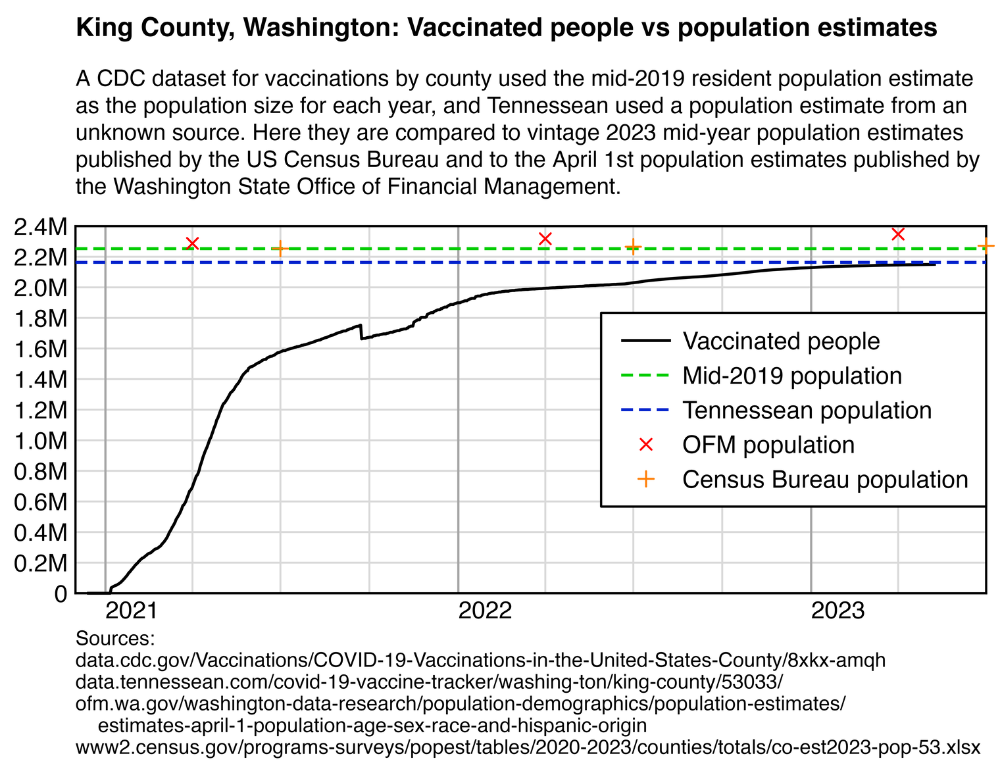
library(data.table);library(ggplot2);library(ggtext)
xstart=as.Date("2020-12-1");xend=as.Date("2023-7-1")
t=fread("d/cd/COVID-19_Vaccinations_in_the_United_States_County_20240227.csv.gz")
p=t[FIPS==53033,.(x=as.Date(Date,"%m/%d/%Y"),y=Administered_Dose1_Recip,z="Vaccinated people (CDC)")]
p=rbind(p,t[FIPS==53033,.(x=seq(xstart,xend,1),y=Census2019[1],z="Mid-2019 population (CDC)")])
p=rbind(p,p[,.(x=seq(xstart,xend,1),y=2163216,z="Tennessean population")])
pop=data.table(z="OFM population",x=as.Date(paste0(2020:2023,"-4-1")),y=c(2269675,2287050,2317700,2347800))
pop=rbind(pop,data.table(z="Census Bureau population",x=as.Date(paste0(2020:2023,"-7-1")),y=c(2274282,2252980,2265311,2271380)))
p=rbind(p,pop)
p[,z:=factor(z,unique(z))]
xbreak=seq(as.Date("2021-1-1"),xend,"year");xlab=2021:2023
ystart=0;ybreak=pretty(p$y,10);yend=max(ybreak)
cap="Sources:
data.cdc.gov/Vaccinations/COVID-19-Vaccinations-in-the-United-States-County/8xkx-amqh
data.tennessean.com/covid-19-vaccine-tracker/washing-ton/king-county/53033/
ofm.wa.gov/washington-data-research/population-demographics/population-estimates/
estimates-april-1-population-age-sex-race-and-hispanic-origin
www2.census.gov/programs-surveys/popest/tables/2020-2023/counties/totals/co-est2023-pop-53.xlsx"
ggplot(p,aes(x,y))+
geom_vline(xintercept=seq(as.Date("2021-1-1"),xend,"3 month"),color="gray85",linewidth=.26)+
geom_hline(yintercept=ybreak,linewidth=.26,color="gray85")+
geom_vline(xintercept=seq(as.Date("2021-1-1"),xend,"year"),color="gray65",linewidth=.3)+
geom_vline(xintercept=c(xstart,xend),linewidth=.3,lineend="square")+
geom_hline(yintercept=c(ystart,yend),linewidth=.3,lineend="square")+
geom_line(aes(color=z,linewidth=z))+
geom_point(aes(color=z,alpha=z,shape=z),stroke=.4,size=1.2)+
labs(title="King County, Washington: Vaccinated people vs population estimates",subtitle=paste0("A CDC dataset for vaccinations by county used mid-2019 resident population estimates for each year, and Tennessean used population estimates from an unknown source. Here they are compared to vintage 2023 population estimates published by the US Census Bureau and 2020-2023 population estimates published by the Washington State Office of Financial Management."),x=NULL,y=NULL,caption=cap)+
scale_x_date(limits=c(xstart,xend),breaks=xbreak,labels=xlab)+
scale_y_continuous(limits=c(ystart,yend),breaks=ybreak,labels=\(x)ifelse(x==0,0,sprintf("%.1fM",x/1e6)))+
scale_color_manual(values=c("black",hsv(c(12,23)/36,1,.8),"red",hsv(3/36,1,.7)))+
scale_shape_manual(values=c(1,1,1,4,3))+
scale_alpha_manual(values=c(0,0,0,1,1))+
scale_linewidth_manual(values=c(.4,.4,.4,0,0))+
coord_cartesian(clip="off",expand=F)+
theme(axis.text=element_text(size=7,color="black"),
axis.text.x=element_text(hjust=0),
axis.ticks.length=unit(0,"pt"),
legend.background=element_rect(fill="white",color="black",linewidth=.3),
legend.box.spacing=unit(0,"pt"),
legend.direction="vertical",
legend.justification=c(1,.5),
legend.key.height=unit(10,"pt"),
legend.key.width=unit(18,"pt"),
legend.key=element_blank(),
legend.margin=margin(3,5,3,4),
legend.position=c(1,.5),
legend.spacing.x=unit(1.5,"pt"),
legend.spacing.y=unit(0,"pt"),
legend.text=element_text(size=7),
legend.title=element_blank(),
panel.background=element_blank(),
plot.margin=margin(4,4,4,4),
plot.subtitle=element_textbox_simple(size=6.5,margin=margin(4,,8)),
plot.caption=element_text(size=5.8,margin=margin(2,,1),hjust=0),
plot.title=element_text(size=7.5,face="bold",margin=margin(1,,4)))
ggsave("1.png",width=4,height=3.1,dpi=380*4)
system("magick 1.png -resize 25% 1.png")
The Tennessean dataset only includes data up to December 7th 2022, when it says there were 98.02% vaccinated people, so Hulscher et al. used the last value included in the dataset as their figure for the percentage of vaccinated people in 2023. However the CDC dataset includes data up to May 10th 2023 when it has 2,150,280 vaccinated people in King County, which would be about 99.4% of the population size used by Tennessean (2150280/2163216).
I don't think the percentage of vaccinated people would be as high as 98% anyway, because for example the percentage of vaccinated children under ages 10 is not very high. In the CDC dataset for COVID vaccinations by county state, there's many counties that have more vaccinated people than total people. So I don't know if for example the dataset includes vaccinated people who have died or moved outside the county.
On the website of King County only about 14% of people in ages 0-4 are listed as having completed the primary course: [https://kingcounty.gov/en/dept/dph/health-safety/disease-illness/covid-19/data/vaccination]
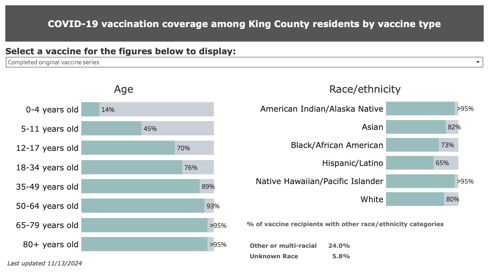
Hulscher et al. wrote: "Specifically, the number of cardiopulmonary arrest deaths increased from 891 in 2015 to 1,110 in 2020, representing a 24.6% increase. In 2021, deaths jumped to 1,229 and continued to rise to 1,310 in 2022. The projection for 2023 suggests 1,392 cardiopulmonary arrest deaths in King County, WA, indicating a sharp 25.4% increase since the onset of COVID-19 vaccination campaigns"
However in their Table 1 the number of deaths in 2020 was 1121 and not 1110. But 1110 was the baseline value for 2020, so the authors seem to have accidentally calculated the increase between 2020 and 2023 using the baseline value instead of the number of deaths for 2020.
But the number of deaths actually increased from 1121 in 2020 to 1392 in 2023, so it was an increase of about about 24.2% and not 24.6%. But the baseline also increased by about 12% from 1110 in 2020 to 1245 in 2023, so the excess deaths only increased by about 10.8 percentage points: (1392/1245)-(1121/1110).
However the figure for 2023 wasn't even the real number of deaths but a linear projection of the deaths in 2021 and 2022. And the real number of deaths in 2023 was 1358, so the excess deaths between 2020 and 2023 increased by only about 8.1 percentage points relative to the baseline: (1358/1245)-(1121/1110).
But the baseline might have also been too low in 2023 because the long-term trend in deaths seemed to be curved upwards. And the authors also didn't exclude COVID deaths and there were still some COVID deaths in 2023.
John Beaudoin posted this tweet: [https://x.com/JohnBeaudoinSr/status/1865960799723741279]
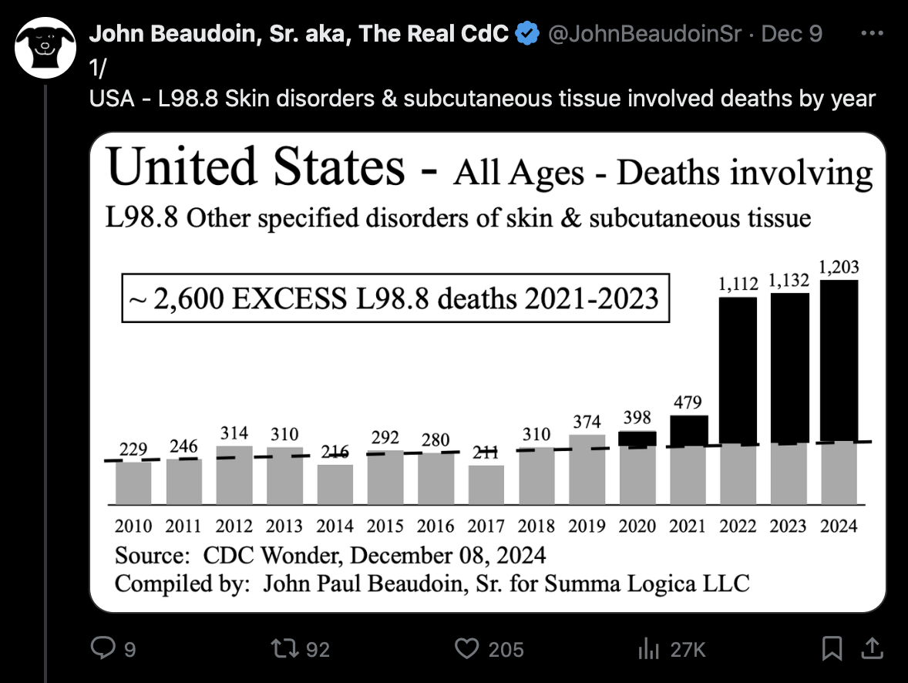
However if you look at monthly instead of yearly data, both L98.8 and L98.9 seem to have had a sudden increase between December 2021 and January 2022. And in the case of both codes, all months of 2022 have a higher number of deaths than any month of 2021:
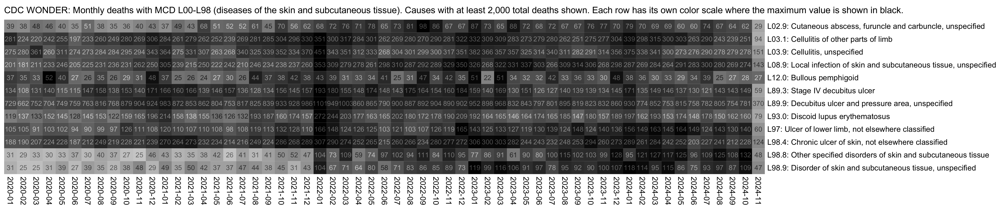
t=fread("http://sars2.net/f/wonderskinmonthly.csv")[date>="2020"][order(code)]
t=t[code%in%t[,sum(dead),code][V1>=2e3,code]]
t=t[,label:=paste0(code,": ",cause)][,label:=factor(label,unique(label))]
m=t[,xtabs(dead~label+date)]
disp=m
m=m/apply(m,1,max)
pal=sapply(255:0/255,\(i)rgb(i,i,i))
pheatmap::pheatmap(m,filename="1.png",display_numbers=disp,
cluster_rows=F,cluster_cols=F,legend=F,cellwidth=15,cellheight=15,fontsize=9,fontsize_number=8,
## number_color=ifelse(m>.5,"white","black"),
number_color=pal[m*255+70*ifelse(m>.5,-1,1)],
border_color=NA,
breaks=seq(0,1,,256),pal)
system("magick 1.png -trim -bordercolor white -border 20 1.png;w=`identify -format %w 1.png`;pad=20;magick -pointsize 44 -font Arial \\( -size $[w-pad*2] caption:'CDC WONDER: Monthly deaths with MCD L00-L98 (diseases of the skin and subcutaneous tissue). Causes with at least 2,000 total deaths shown. Each row has its own color scale where the maximum value is shown in black.' -splice $[pad]x24 \\) 1.png -append 1.png")
So the increase at the start of 2022 might be due to some kind of a change in coding practices. Often changes to coding practices seem to be adopted at the start of a new year, like how here there's a jump up for N18 at the start of 2011 and a jump down at the start of 2013, and there's a jump down for N28.8 at the start of 2022: [ethical.html#Deaths_with_kidney_related_MCD_in_ages_0_to_64]
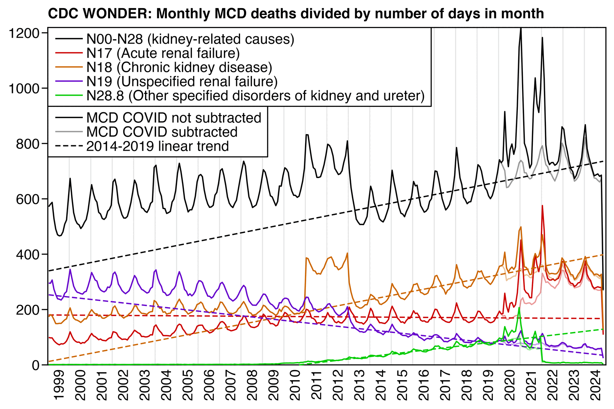
MCD L98.8 previously also had a sudden increase between the December of 2005 and the January of 2006, so that there were about 4 times more deaths in 2006 than 2005:
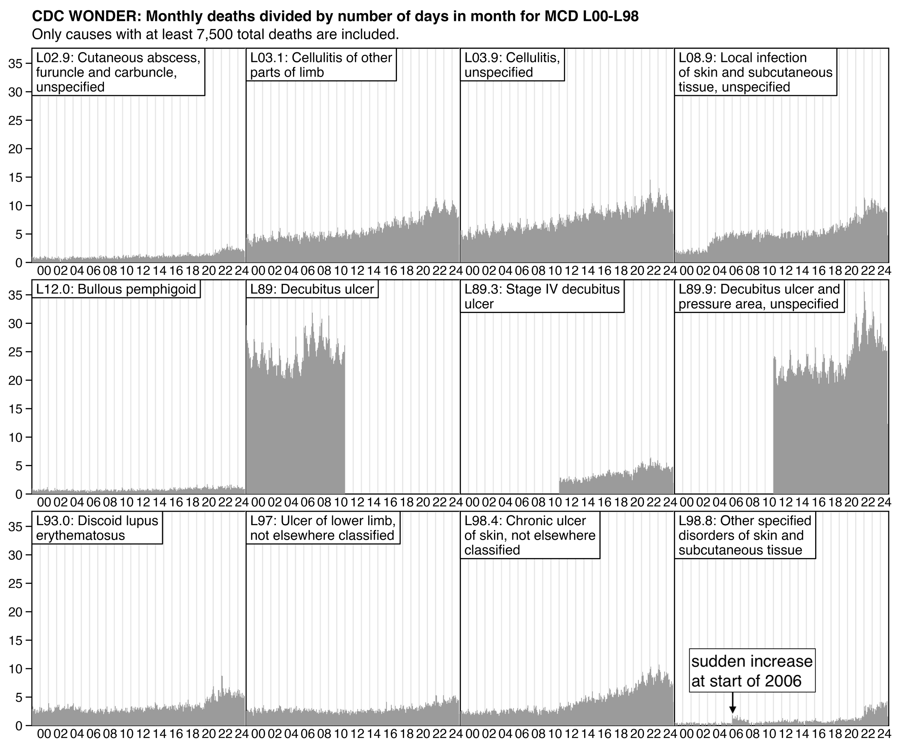
John Beaudoin posted this tweet: [https://x.com/JohnBeaudoinSr/status/1866720003485204511]
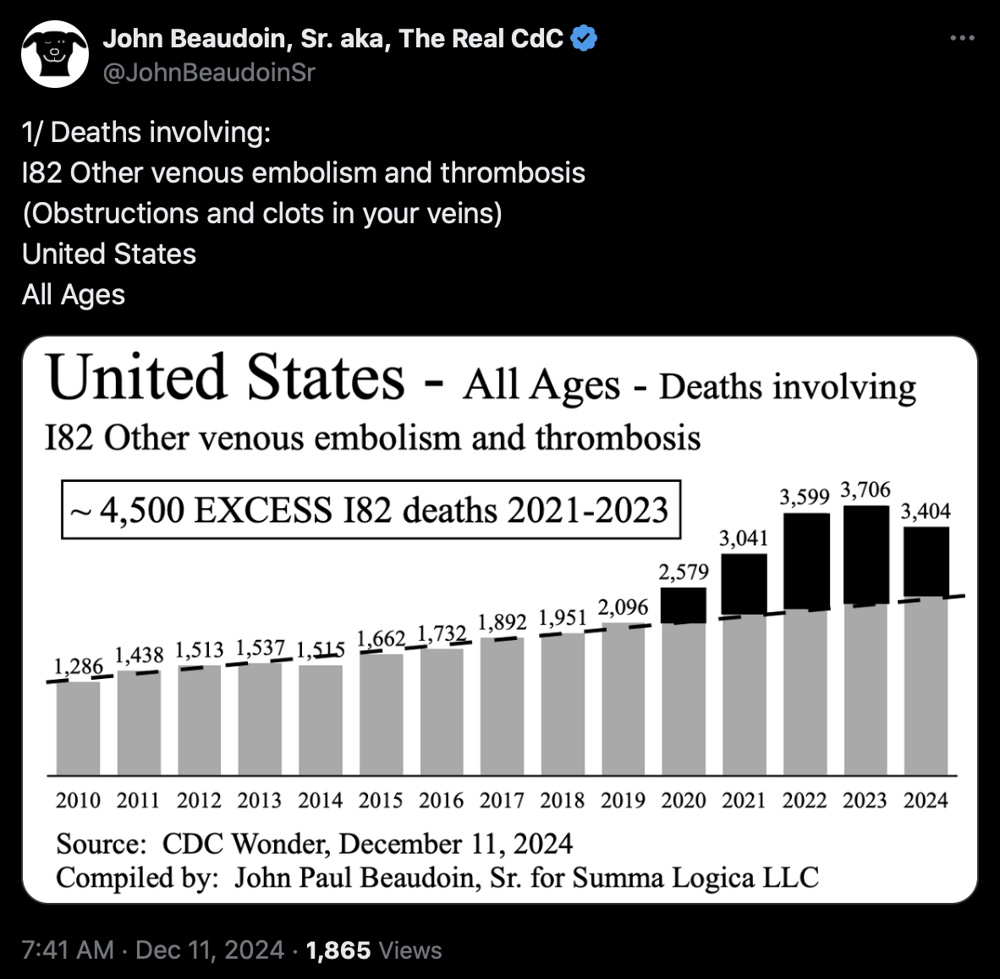
However I pointed out that ICD codes are like fashion that comes and goes. There's so many codes that it's easy to find codes that have gone up since 2021. Deaths with MCD I12 (hypertensive renal disease) almost quadrupled between 2012 and 2013. MCD I63 (cerebral infarction) almost tripled beween 2013 and 2018. And MCD I81 (portal vein thrombosis) doubled between 2015 and 2019:
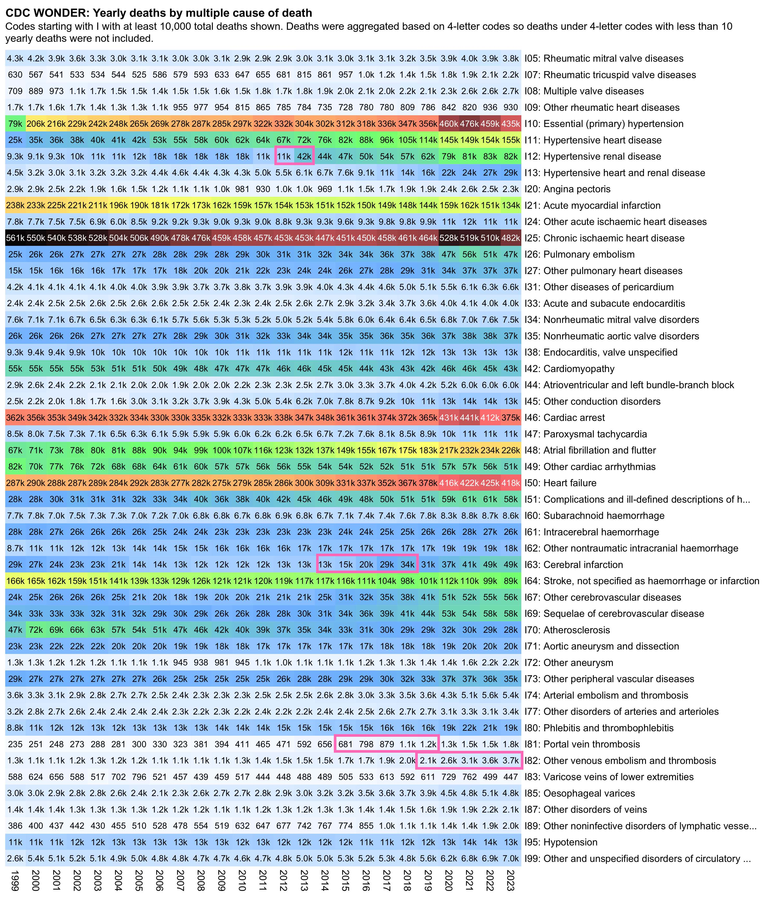
library(data.table)
kimi=\(x){na=is.na(x);x[na]=0;e=floor(log10(ifelse(x==0,1,abs(x))));e2=pmax(e,0)%/%3+1;x[]=ifelse(abs(x)<1e3,round(x),paste0(sprintf(paste0("%.",ifelse(e%%3==0,1,0),"f"),x/1e3^(e2-1)),c("","k","M","B","T")[e2]));x[na]="NA";x}
icd=fread("http://sars2.net/f/wondericd.csv")
t=fread("http://sars2.net/f/wonderbyicd.csv.gz")[type=="MCD"&year!=2024&code%like%"I"]
t=merge(icd,t[,.(dead=sum(dead)),,.(code=substr(code,1,3),year)])
t=t[code%in%t[,sum(dead),code][V1>=1e4,code]]
m=t[,xtabs(dead~paste0(code,": ",cause)+year)]
maxcolor=max(m);exp=.6
pal=hsv(c(21,21,12,6,3,0,0)/36,c(0,.5,.5,.5,.5,.5,0),rep(1:0,c(6,1)))
pheatmap::pheatmap(m^exp,filename="1.png",
display_numbers=ifelse(m<10,m,kimi(m)),
cluster_rows=F,cluster_cols=F,legend=F,cellwidth=19,cellheight=15,fontsize=9,fontsize_number=8,
border_color=NA,na_col="gray90",
number_color=ifelse(abs(m^exp)>maxcolor^exp*.8,"white","black"),
breaks=seq(0,maxcolor^exp,,256),
colorRampPalette(pal)(256))
system("w=`identify -format %w 1.png`;pad=20;magick -pointsize 44 -font Arial-Bold -size $[w-pad*2] \\( caption:'CDC WONDER: Yearly deaths by multiple cause of death' -splice $[pad]x24 \\) \\( -font Arial -pointsize 40 caption:'Codes starting with I with at least 10,000 total deaths shown. Deaths were aggregated based on 4-letter codes so deaths under 4-letter codes with less than 10 yearly deaths were not included.' -splice $[pad]x2 \\) 1.png -append 1.png")
John Beaudoin posted these tweets: [https://x.com/JohnBeaudoinSr/status/1866915597331595599]
In the second plot he adjusted for the impact of COVID by dividing the number of deaths with MCD D80-D89 by the total number of deaths from all causes. But it's not an accurate method to adjust for the impact of COVID because some MCDs have a higher proportion of COVID deaths than other MCDs. In 2020-2024 the proportion of deaths with MCD COVID was about 14% for MCD D80-D89 but only about 8% for deaths from all causes.
In the next plot when I instead plotted deaths that had MCD D80-D89 but not MCD COVID, I got negative excess deaths in 2021. I still got clearly positive MCD deaths in 2023 and 2024, even though it might partially be if my linear baseline was inaccurate because the long-term trend in deaths going back to 1999 seems to be curved upwards. And for some reason the UCD deaths remained close to the baseline even in 2023 and 2024, so I don't know what explains the difference between MCD and UCD in 2023 and 2024:
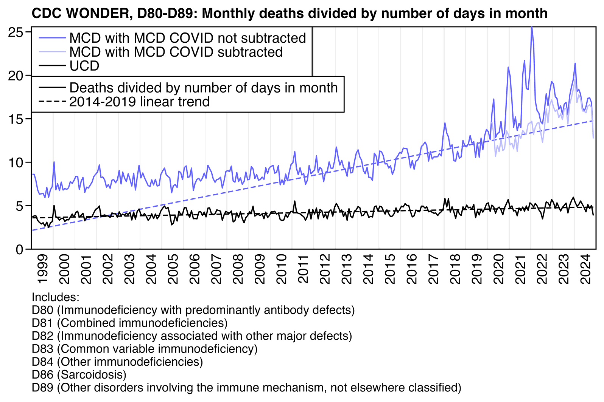
library(data.table);library(ggplot2)
t=fread("http://sars2.net/f/wonderd80d89.csv")
t=t[,.(x=as.Date(paste(year,month,1,sep="-")),y=dead,z=factor(cause,unique(cause)),type)]
t[,y:=y/lubridate::days_in_month(x)]
p=t[type=="ucd",.(x,y,z,type=3)]
p=rbind(p,t[type=="mcd"][,type:=1],dcast(t,z+x~type,value.var="y")[,.(z,x,type=2,y=mcd-nafill(and,,0))])
base=p[type%in%c(1,3)&year(x)%in%2014:2019,.(x=unique(p$x),y=predict(lm(y~x),.(x=unique(p$x)))),.(type,z)]
p=rbind(p[,linetype:=1],base[,linetype:=2])
p=p[!(type==2&x<"2020-3-1")]
p[,type:=factor(type,,c("MCD with MCD COVID not subtracted","MCD with MCD COVID subtracted","UCD"))]
p[,linetype:=factor(linetype,,c("Deaths divided by number of days in month","2014-2019 linear trend"))]
xstart=as.Date("1999-1-1");xend=as.Date("2025-1-1")
xbreak=seq(xstart,xend,"6 month");xlab=ifelse(month(xbreak)==7,year(xbreak),"")
ybreak=pretty(p$y,6);ystart=0;yend=max(p$y)
cap="Includes:
D80 (Immunodeficiency with predominantly antibody defects)
D81 (Combined immunodeficiencies)
D82 (Immunodeficiency associated with other major defects)
D83 (Common variable immunodeficiency)
D84 (Other immunodeficiencies)
D86 (Sarcoidosis)
D89 (Other disorders involving the immune mechanism, not elsewhere classified)"
ggplot(p,aes(x+15,y))+
geom_vline(xintercept=seq(xstart,xend,"year"),color="gray90",linewidth=.25)+
geom_hline(yintercept=c(ystart,0,yend),linewidth=.25,lineend="square")+
geom_vline(xintercept=c(xstart,xend),linewidth=.25,lineend="square")+
geom_line(aes(y=ifelse(y<0,NA,y),color=type,linetype=linetype),linewidth=.3)+
labs(title="CDC WONDER, D80-D89: Monthly deaths divided by number of days in month",x=NULL,y=NULL,caption=cap)+
scale_x_continuous(limits=c(xstart,xend),breaks=xbreak,labels=xlab)+
scale_y_continuous(limits=c(ystart,yend),breaks=ybreak)+
scale_color_manual(values=c("#6666ff","#bbbbff","black"))+
scale_linetype_manual(values=c("solid","42"))+
coord_cartesian(clip="off",expand=F)+
guides(color=guide_legend(order=1),linetype=guide_legend(order=2),alpha=guide_legend(order=2))+
theme(axis.text=element_text(size=7,color="black"),
axis.text.x=element_text(angle=90,vjust=.5,hjust=1),
axis.text.y=element_text(margin=margin(,1)),
axis.ticks=element_line(linewidth=.25,color="black"),
axis.ticks.length.x=unit(0,"pt"),
axis.ticks.length.y=unit(3,"pt"),
legend.background=element_rect(fill=alpha("white",1),color="black",linewidth=.25),
legend.box="vertical",
legend.box.just="left",
legend.box.spacing=unit(0,"pt"),
legend.justification=c(0,1),
legend.key=element_blank(),
legend.margin=margin(2,3,2,2),
legend.key.height=unit(7,"pt"),
legend.key.width=unit(17,"pt"),
legend.position=c(0,1),
legend.spacing.x=unit(0,"pt"),
legend.spacing.y=unit(0,"pt"),
legend.text=element_text(size=7,vjust=.5),
legend.title=element_blank(),
panel.background=element_blank(),
plot.caption=element_text(size=6,hjust=0,margin=margin(4)),
plot.margin=margin(4,4,4,4),
plot.title=element_text(size=7,face=2,margin=margin(,,3)))
ggsave("1.png",width=4.2,height=2.8,dpi=380*4)
system("magick 1.png -resize 25% PNG8:1.png")
The next plot shows that the increase in MCD deaths seems to be primarily due to D89.9 (Other disorders involving the immune mechanism, unspecified) and secondarily due to D86.9 (Sarcoidosis, unspecified). However the number of deaths under D89.9 also had a sudden ten-fold increase between 2005 and 2006, so I guess Beaudoin would've also blamed it on the COVID vaccines if the vaccines would've been rolled out in 2006:
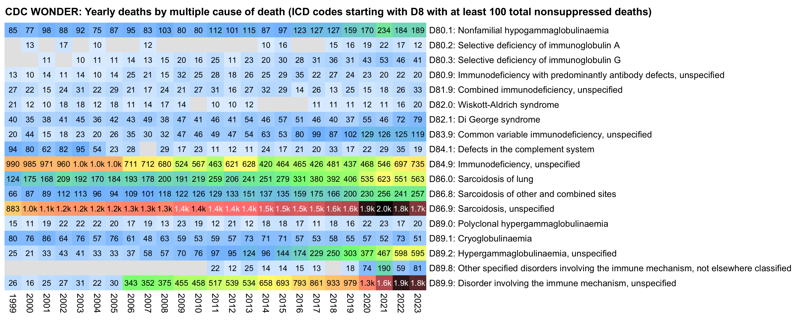
library(data.table)
kimi=\(x){na=is.na(x);x[na]=0;e=floor(log10(ifelse(x==0,1,abs(x))));e2=pmax(e,0)%/%3+1;x[]=ifelse(abs(x)<1e3,round(x),paste0(sprintf(paste0("%.",ifelse(e%%3==0,1,0),"f"),x/1e3^(e2-1)),c("","k","M","B","T")[e2]));x[na]="NA";x}
t=fread("http://sars2.net/f/wonderbyicd.csv.gz")[type=="MCD"&year!=2024&code%like%"D8"]
t=t[code%in%t[,sum(dead),code][V1>=100,code]]
t=t[order(code)]
t=t[,label:=paste0(code,": ",sub(" \\[.*","",cause))][,label:=factor(label,unique(label))]
m=t[,tapply(dead,.(label,year),c)]
maxcolor=max(m,na.rm=T);exp=.6
pal=hsv(c(21,21,12,6,3,0,0)/36,c(0,.5,.5,.5,.5,.5,0),rep(1:0,c(6,1)))
pheatmap::pheatmap(m^exp,filename="1.png",
display_numbers=ifelse(m<10,m,kimi(m)),
cluster_rows=F,cluster_cols=F,legend=F,cellwidth=19,cellheight=15,fontsize=9,fontsize_number=8,
border_color=NA,na_col="gray90",
number_color=ifelse(abs(m^exp)>maxcolor^exp*.8,"white","black"),
breaks=seq(0,maxcolor^exp,,256),
colorRampPalette(pal)(256))
system("w=`identify -format %w 1.png`;pad=20;magick -pointsize 44 -font Arial-Bold \\( -size $[w-pad] caption:'CDC WONDER: Yearly deaths by multiple cause of death (ICD codes starting with D8 with at least 100 total nonsuppressed deaths)' -splice $[pad]x24 \\) 1.png -append 1.png")
Peter Hegarty, Raphael Lataster, Igor Chudov, and Guyla Nagy have all published a similar analysis where they compared excess mortality across European countries against the percentage of vaccinated people, and they found that the percentage of vaccinated people had a positive correlation with excess mortality in 2023. [https://x.com/PeterHegarty17/status/1700894195362197780, https://okaythennews.substack.com/p/study-shows-european-excess-mortality, https://www.igor-chudov.com/p/2023-excess-mortality-positively, https://forum.index.hu/Article/jumpTree?a=166090420&t=9243202] Chudov took excess mortality data from OECD which used a 2015-2019 average baseline, but the others took excess mortality data from Eurostat which uses a 2016-2019 average baseline.
However a prepandemic average baseline for raw deaths overestimates excess mortality in Western European countries relative to Eastern European countries. And Eastern European countries have a lower percentage of vaccinated people which explains the positive correlation in 2023.
In the years before COVID Western European countries had on average a steeper increase in the number of deaths per year than Eastern European countries. And in Eastern European countries the population size was reduced more by excess deaths in 2020 and 2021, so in the plot below where I calculated the green line for the expected number of deaths by multiplying the pre-COVID trend in deaths for each age by the population estimates for each age, Eastern European countries have a bigger drop in the baseline by 2022:
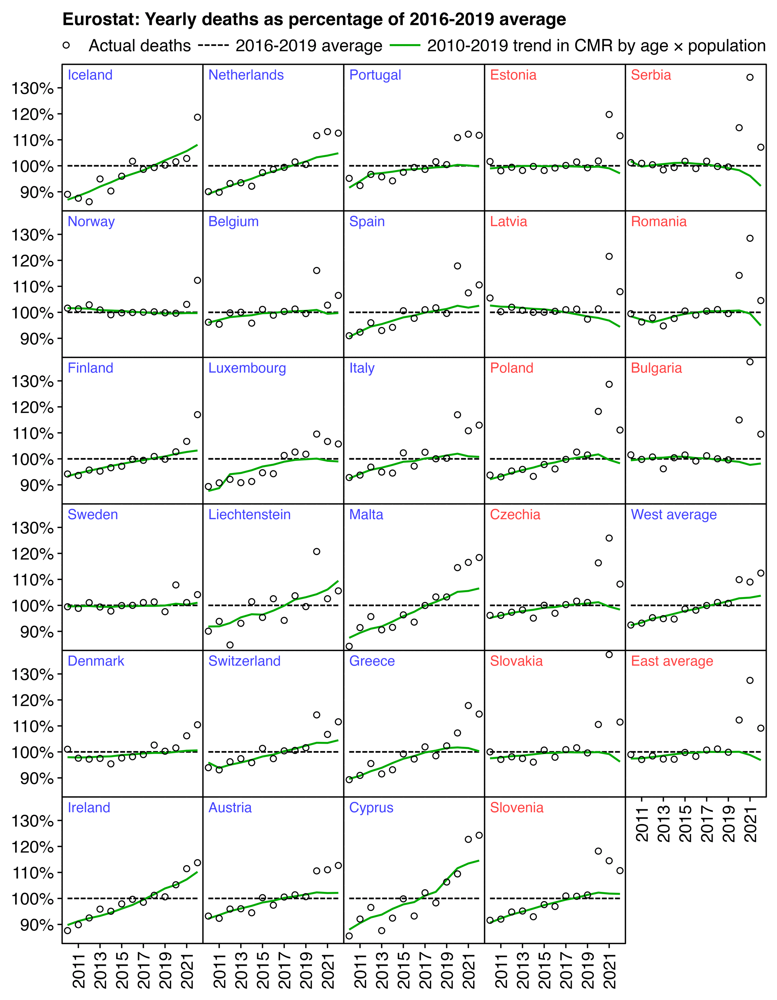
library(data.table);library(ggplot2)
q=\(...)as.character(substitute(...()))
# sars2.net/stat.html#Eurostat
t=fread("http://sars2.net/f/eurostatpopdead.csv.gz")[year%in%2010:2022]
t=t[location%in%na.omit(t)[,.N,location][N==max(N),location]]
t=t[!location%in%q(DE_TOT,EFTA)]
base=t[year%in%2010:2019,.(year=2010:2022,base=predict(lm(dead/pop~year),.(year=2010:2022))),.(age,location)]
p=merge(t,base)[,.(dead=sum(dead),base=sum(base*pop)),.(year,name)]
p=merge(p,p[year%in%2016:2019,.(ave=mean(dead)),name])
lab=c("Actual deaths","2016-2019 average","2010-2019 trend in CMR by age × population")
p=p[,.(x=year,y=c(dead,ave,base),z=factor(rep(lab,each=.N),lab),group=name)]
west=q(Iceland,Norway,Finland,Sweden,Denmark,Ireland,Netherlands,Belgium,Luxembourg,Germany,Liechtenstein,Switzerland,Austria,France,Portugal,Spain,Italy,Malta,Greece,Cyprus)
east=q(Estonia,Latvia,Poland,Czechia,Slovakia,Hungary,Slovenia,Croatia,Serbia,Romania,Bulgaria)
tot=c("West average","East average")
p=merge(p,p[z==z[1]&x%in%2016:2019,.(base=mean(y)),group])[,y:=y/base*100]
p=rbind(p,p[,.(y=mean(y),base=mean(base)),.(z,x,group=ifelse(group%in%west,tot[1],tot[2]))])
p[,group:=factor(group,c(west,east,tot))]
xstart=2010;xend=2022;p=p[x%in%xstart:xend]
ggplot(p,aes(x,y))+
facet_wrap(~group,ncol=5,dir="v")+
geom_hline(yintercept=0,color="gray60",linewidth=.4)+
geom_line(aes(color=z,linewidth=z,linetype=z))+
geom_point(aes(alpha=z,color=z),stroke=.5,size=1.5,shape=1)+
geom_text(data=p[rowid(group)==1],aes(label=group),color=ifelse(p[rowid(group)==1,group]%in%c(west,tot[1]),"#4444ff","#ff4444"),y=max(p$y),x=xstart,hjust=0,size=3.2,vjust=1.1)+
labs(title="Eurostat: Yearly deaths as percentage of 2016-2019 average",x=NULL,y=NULL)+
scale_x_continuous(limits=c(xstart-.5,xend+.5),breaks=seq(xstart+1,xend,2))+
scale_y_continuous(limits=extendrange(p$y,,.03),breaks=pretty,labels=\(x)paste0(x,"%"))+
coord_cartesian(clip="off",expand=F)+
scale_color_manual(values=c("black","black","#00aa00"))+
scale_linewidth_manual(values=c(0,.5,.6))+
scale_linetype_manual(values=c("solid","31","solid"))+
scale_alpha_manual(values=c(1,0,0))+
theme(axis.text=element_text(size=11,color="black"),
axis.text.x=element_text(angle=90,vjust=.5,hjust=),
axis.ticks=element_line(linewidth=.4,color="black"),
axis.ticks.length=unit(3,"pt"),
axis.title=element_text(size=8),
legend.background=element_blank(),
legend.box.spacing=unit(0,"pt"),
legend.justification="right",
legend.key=element_blank(),
legend.key.height=unit(13,"pt"),
legend.key.width=unit(25,"pt"),
legend.margin=margin(,,6),
legend.position="top",
legend.spacing.x=unit(2,"pt"),
legend.text=element_text(size=11,vjust=.5),
legend.title=element_blank(),
panel.background=element_blank(),
panel.border=element_rect(fill=NA,linewidth=.4),
panel.spacing.x=unit(0,"pt"),
panel.spacing.y=unit(0,"pt"),
plot.margin=margin(7,7,7,7),
plot.title=element_text(size=11.5,face=2,margin=margin(1,,4)),
strip.background=element_blank(),
strip.text=element_blank())
ggsave("1.png",width=7,height=9,dpi=300*4)
system("magick 1.png -resize 25% -colors 256 1.png")
In the plot above I used Eurostat's population estimates on January 1st for each year, so for example in Spain the green line drops between 2020 and 2021 because the excess deaths in 2020 didn't affect the population estimates I used until 2021. If I would've used mid-year population estimates or the average population throughout the year, the green line in Spain would've already dropped in 2020.
I treated Finland, Greece, and Cyprus as Western European even though they are geographically part of Eastern Europe. But they had a higher percentage of vaccinated people than any eastern bloc country in my analysis, and before COVID their yearly number of deaths was also increasing at a steeper slope than in most eastern bloc countries.
Here my correlation between the percentage of vaccinated people and excess mortality in 2022 dropped from about 0.34 to about -0.16 when I switched from the 2016-2019 average baseline to a 2013-2019 linear regression for ASMR:
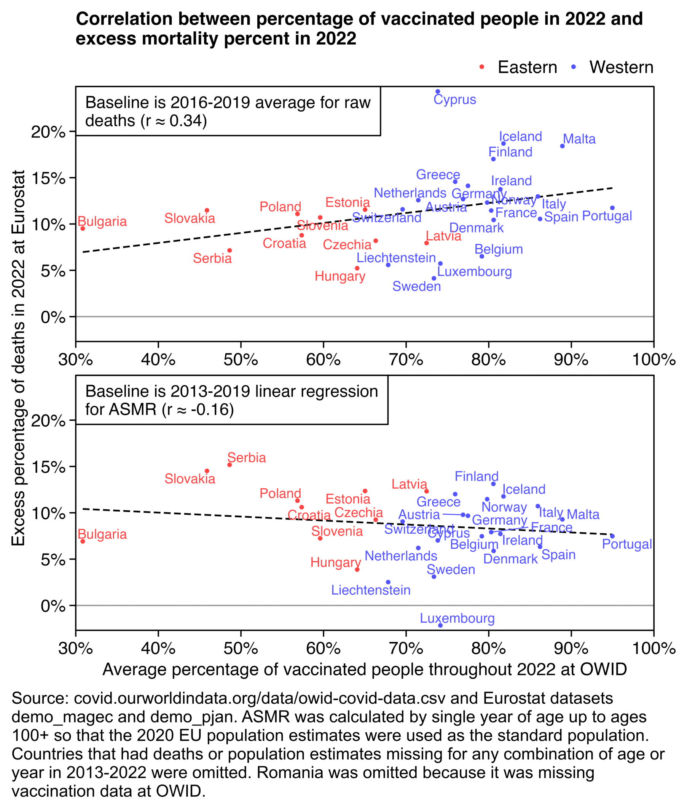
download.file("https://covid.ourworldindata.org/data/owid-covid-data.csv","owid-covid-data.csv")
library(data.table);library(ggplot2)
o=fread("owid-covid-data.csv")
# sars2.net/stat.html#Eurostat
t=fread("http://sars2.net/f/eurostatpopdead.csv.gz")[year%in%2013:2022]
t=merge(t,t[location=="EU27_2020"&year==2020,.(age,std=pop/sum(pop))])
t=t[location%in%na.omit(t)[,.N,location][N==max(N),location]]
t=t[!location%in%c("DE_TOT")]
a=t[,.(dead=sum(dead),asmr=sum(dead/pop*std)*1e5),.(location,name,year)]
a$base=a[year<2020,predict(lm(asmr~year),.(year=2013:2022)),location]$V1
a$base2=a[year%in%2015:2019,predict(lm(dead~year),.(year=2013:2022)),location]$V1
a=merge(a,a[year%in%2016:2019,.(base3=mean(dead)),location])
p=a[year==2022,.(x=(asmr/base-1)*100,y=(dead/base3-1)*100),name]
p=merge(p,o[year(date)==2022,.(vaxpct=mean(people_vaccinated_per_hundred,na.rm=T)),.(name=location)])
p=na.omit(p)
lab=c("2016-2019 average for raw deaths","2013-2019 linear regression for ASMR")
p=p[,.(name,x=vaxpct,y=c(y,x),facet=factor(rep(lab,each=.N),lab))]
q=\(...)as.character(substitute(...()))
east=q(Bulgaria,Croatia,Cyprus,Czechia,Estonia,Greece,Hungary,Latvia,Poland,Romania,Serbia,Slovenia,Slovakia)
lab=q(Eastern,Western)
p$z=factor(ifelse(p$name%in%east,lab[1],lab[2]),lab)
levels(p$facet)=p[,cor(x,y),facet][,sprintf("Baseline is %s (r ≈ %.2f)",facet,V1)]
xbreak=pretty(p$x,7);ybreak=pretty(p$y,7);ylim=extendrange(p$y,,.02)
ggplot(p,aes(x,y))+
facet_wrap(~facet,dir="v",scales="free_x")+
coord_cartesian(clip="off",expand=F)+
geom_vline(xintercept=0,linewidth=.4,color="gray60")+
geom_hline(yintercept=0,linewidth=.4,color="gray60")+
geom_smooth(method="lm",formula=y~x,linewidth=.5,se=F,color="black",linetype="42")+
geom_label(data=p[rowid(facet)==1],aes(label=stringr::str_wrap(facet,40)),x=xbreak[1],y=ylim[2],lineheight=.9,hjust=0,vjust=1,size=3.7,label.r=unit(0,"pt"),label.padding=unit(6,"pt"),label.size=.4)+
geom_point(aes(color=z),size=.7)+
ggrepel::geom_text_repel(aes(label=name,color=z),size=3,max.overlaps=Inf,segment.size=.3,min.segment.length=.2,box.padding=.07,show.legend=F)+
labs(title="Correlation between percentage of vaccinated people in 2022 and\nexcess mortality percent in 2022",x="Average percentage of vaccinated people throughout 2022 at OWID",y="Excess percentage of deaths in 2022 at Eurostat")+
scale_x_continuous(breaks=xbreak,limits=range(xbreak),labels=\(x)paste0(x,"%"))+
scale_y_continuous(breaks=ybreak,limits=ylim,labels=\(x)paste0(x,"%"))+
scale_color_manual(values=c("#ff4444","#5555ff"))+
theme(axis.text=element_text(size=11,color="black"),
axis.text.x=element_text(margin=margin(3)),
axis.ticks=element_line(linewidth=.4,color="black"),
axis.ticks.length=unit(4,"pt"),
axis.title=element_text(size=11),
axis.title.x=element_text(margin=margin(3)),
axis.title.y=element_text(margin=margin(,2)),
legend.background=element_blank(),
legend.box.spacing=unit(0,"pt"),
legend.key=element_blank(),
legend.key.height=unit(13,"pt"),
legend.key.width=unit(16,"pt"),
legend.position="top",
legend.justification="right",
legend.spacing.x=unit(2,"pt"),
legend.margin=margin(,,6),
legend.text=element_text(size=11,vjust=.5),
legend.title=element_blank(),
panel.background=element_blank(),
panel.border=element_rect(fill=NA,linewidth=.4),
panel.grid.major=element_blank(),
panel.spacing=unit(4,"pt"),
plot.margin=margin(6,22,5,5),
plot.subtitle=element_text(size=11),
plot.title=element_text(size=11.5,face=2,margin=margin(1,,5)),
strip.background=element_blank(),
strip.text=element_blank())
ggsave("1.png",width=6,height=6,dpi=300*4)
sub="Source: covid.ourworldindata.org/data/owid-covid-data.csv and Eurostat datasets demo_magec and demo_pjan. ASMR was calculated by single year of age up to ages 100+ so that the 2020 EU population estimates were used as the standard population. Countries that had deaths or population estimates missing for any combination of age or year in 2013-2022 were omitted. Romania was omitted because it was missing vaccination data at OWID."
system(paste0("mogrify -trim 1.png;w=`identify -format %w 1.png`;magick 1.png \\( -size $[w]x -font Arial -interline-spacing -3 -pointsize $[44*4] caption:'",gsub("'","'\\\\'",sub),"' -splice x100 \\) -append -resize 25% -bordercolor white -border 30 -colors 256 1.png"))
Here Eastern European countries are also more likely to be below the diagonal, which means that the 2016-2019 average baseline likely overestimates their excess mortality in 2022 compared to ASMR:
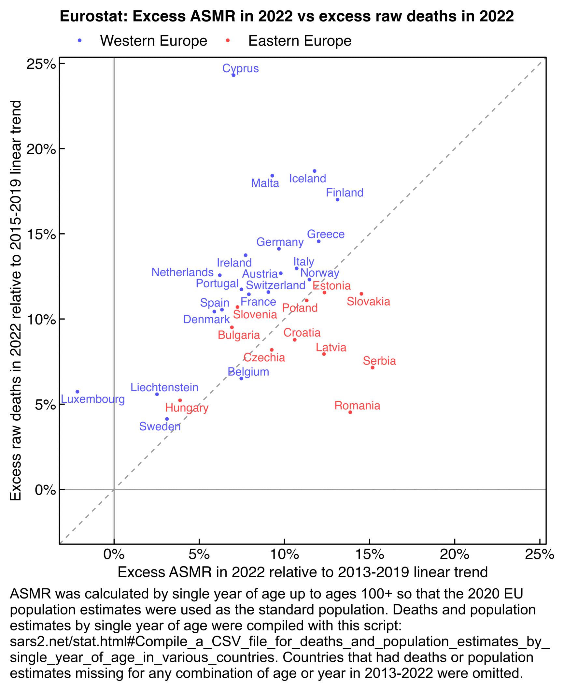
library(data.table);library(ggplot2)
eu=fread("http://sars2.net/f/eurostatpopdead.csv.gz")[year%in%2013:2022] # sars2.net/stat.html#Eurostat
eu=merge(eu,eu[location=="EU27_2020"&year==2020,.(age,std=pop/sum(pop))])
eu=eu[!location%in%c("DE_TOT","EFTA")]
eu=eu[location%in%na.omit(eu)[,.N,location][N==max(N),location]]
a=eu[,.(dead=sum(dead),asmr=sum(dead/pop*std*1e5)),.(name,year)]
a$base=a[year<2020,predict(lm(asmr~year),.(year=2013:2022)),name]$V1
a=merge(a,a[year%in%2016:2019,.(base2=mean(dead)),name])
p=a[year==2022,.(x=(asmr/base-1)*100,y=(dead/base2-1)*100,name)]
east=c("Bulgaria","Croatia","Czechia","Estonia","Hungary","Latvia","Poland","Romania","Serbia","Slovenia","Slovakia")
lab=c("Western Europe","Eastern Europe")
p[,z:=factor(ifelse(name%in%east,lab[2],lab[1]),lab)]
breaks=p[,pretty(c(x,y),9)];lims=p[,extendrange(range(c(x,y)),,.04)]
ggplot(p,aes(x,y))+
coord_fixed(clip="off",expand=F)+
geom_vline(xintercept=0,linewidth=.4,color="gray60")+
geom_hline(yintercept=0,linewidth=.4,color="gray60")+
geom_abline(linetype="dashed",color="gray60",size=.4)+
geom_point(aes(color=z),size=.6)+
ggrepel::geom_text_repel(aes(label=name,color=z),size=3,max.overlaps=Inf,segment.size=.1,min.segment.length=.2,box.padding=.07,show.legend=F)+
labs(title="Eurostat: Excess ASMR vs excess raw deaths in 2022",x="Excess ASMR in 2022 relative to 2013-2019 linear trend",y="Excess raw deaths in 2022 relative to 2016-2019 average")+
scale_x_continuous(limits=lims,breaks=breaks,labels=\(x)paste0(x,"%"))+
scale_y_continuous(limits=lims,breaks=breaks,labels=\(x)paste0(x,"%"))+
scale_color_manual(values=c("#5555ff","#ff4444"))+
theme(axis.text=element_text(size=11,color="black"),
axis.text.x=element_text(margin=margin(3)),
axis.ticks=element_line(linewidth=.4,color="black"),
axis.ticks.length=unit(-4,"pt"),
axis.title=element_text(size=11),
axis.title.x=element_text(margin=margin(3)),
axis.title.y=element_text(margin=margin(,2)),
legend.background=element_blank(),
legend.box.spacing=unit(0,"pt"),
legend.key=element_blank(),
legend.key.height=unit(13,"pt"),
legend.key.width=unit(26,"pt"),
legend.position="top",
legend.justification="left",
legend.spacing.x=unit(2,"pt"),
legend.margin=margin(,,6),
legend.text=element_text(size=11,vjust=.5),
legend.title=element_blank(),
panel.background=element_blank(),
panel.border=element_rect(fill=NA,linewidth=.4),
panel.grid.major=element_blank(),
plot.subtitle=element_text(size=11),
plot.title=element_text(size=11.5,face=2,margin=margin(1,,5)))
ggsave("1.png",width=6,height=6,dpi=300*4)
sub="ASMR was calculated by single year of age up to ages 100+ so that the 2020 EU population estimates were used as the standard population. Deaths and population estimates by single year of age were compiled with this script: sars2.net/stat.html#Compile_a_CSV_file_for_deaths_and_population_estimates_by_single_year_of_age_in_various_countries. Countries that had deaths or population estimates missing for any combination of age or year in 2013-2022 were omitted. Western Europe includes geographically Eastern European countries that were not part of the eastern bloc."
system(paste0("mogrify -trim 1.png;w=`identify -format %w 1.png`;magick 1.png \\( -size $[w]x -font Arial -interline-spacing -3 -pointsize $[44*4] caption:'",gsub("'","'\\\\'",sub),"' -splice x100 \\) -append -resize 25% -bordercolor white -border 30 -colors 256 1.png"))
In the previous plots I used the Eurostat dataset demo_magec which has yearly deaths by single year of age: https://ec.europa.eu/eurostat/databrowser/product/page/demo_magec. However it was still missing deaths for 2023 as of December 2024, so in the next plot I looked at the Eurotat dataset for weekly deaths by five-year age groups instead which also has data for 2023 and 2024: https://ec.europa.eu/eurostat/databrowser/product/page/demo_r_mwk_05. In the top panel of the plot below if you look at the black line for both Western Europe and Eastern Europe, the total correlation in 2023 is close to zero:
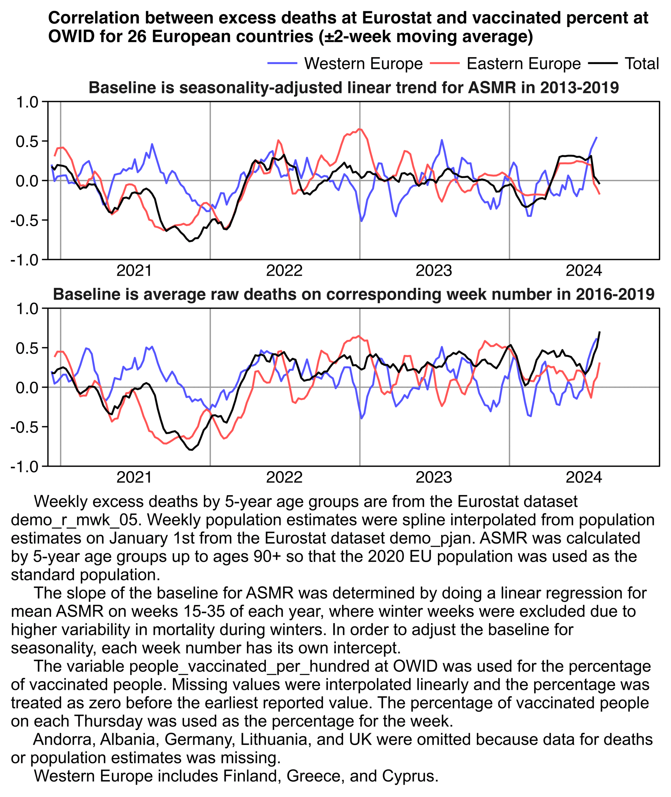
download.file("https://covid.ourworldindata.org/data/owid-covid-data.csv","owid-covid-data.csv")
download.file("https://ec.europa.eu/eurostat/api/dissemination/sdmx/2.1/data/demo_r_mwk_05?format=TSV","demo_r_mwk_05.tsv")
library(data.table);library(ggplot2)
isoweek=\(year,week,weekday=7){d=as.Date(paste0(year,"-1-4"));d-(as.integer(format(d,"%w"))+6)%%7-1+7*(week-1)+weekday}
q=\(...)as.character(substitute(...()))
ma=\(x,b=1,f=b){x[]=rowMeans(embed(c(rep(NA,b),x,rep(NA,f)),f+b+1),na.rm=T);x}
o=fread("owid-covid-data.csv")
euro=fread("demo_r_mwk_05.tsv")
meta=fread(text=euro[[1]],header=F)
pick=meta[,V2%like%"^Y"&V3=="T"];meta=meta[pick];euro=euro[pick]
meta[,age:=as.integer(sub("\\D+(\\d+).*","\\1",sub("Y_LT5",0,V2)))]
eu=meta[,.(loc=V5,age,date=rep(names(euro)[-1],each=.N),dead=as.integer(sub("\\D+","",unlist(euro[,-1],,F))))]
eu[,year:=as.integer(substr(date,1,4))][,week:=as.integer(substr(date,7,8))]
eu[,date:=isoweek(year,week,4)]
eu=eu[loc%in%eu[year%in%2013:2023,.N,loc][N==max(N),loc]]
eu=eu[year>=2013]
pop=fread("http://sars2.net/f/eurostatpopdead.csv.gz")[year%in%2013:2023] # sars2.net/stat.html#Eurostat
a=pop[,.(pop=sum(pop)),.(location,name,date=as.Date(paste0(year,"-1-1")),age=pmin(age,90)%/%5*5)]
a=a[location%in%na.omit(a)[,.N,location][N==max(N),location]]
a=a[,spline(date,pop,xout=unique(eu$date),method="natural"),.(location,age,name)]
a=merge(eu,a[,.(date=`class<-`(x,"Date"),pop=y,loc=location,name,age)])
a=merge(pop[location=="EU27_2020"&year==2020,.(pop=sum(pop)),.(age=pmin(age,90)%/%5*5)][,.(age,std=pop/sum(pop))],a)
a=a[loc%in%na.omit(a)[year%in%2013:2023,.N,loc][N==max(N),loc]]
a=a[,.(dead=sum(dead),asmr=sum(dead/pop*std/7*365e5)),,.(name,date,year,week)]
slope=a[year%in%2013:2019&week%in%15:35,mean(asmr),.(year,name)]
slope=slope[,{x=.(year=2013:2024,slope=predict(lm(V1~year),.(year=2013:2024)));x$slope=x$slope/x$slope[x$year==2016];x},name]
weekly=a[year%in%2013:2019,.(weekly=mean(asmr)),.(week,name)]
a=merge(slope,merge(weekly,a))
a=merge(a[year%in%2016:2019,.(deadbase=mean(dead)),.(name,week)],a)
p=a[,.(pct=(asmr/(slope*weekly)-1)*100,pct2=(dead/deadbase-1)*100),,.(name,date)]
east=q(Estonia,Latvia,Poland,Czechia,Slovakia,Hungary,Montenegro,Slovenia,Croatia,Serbia,Romania,Bulgaria)
p=merge(p,o[,.(date,vax=nafill(nafill(zoo::na.approx(people_vaccinated_per_hundred,na.rm=F),"locf"),,0)),.(name=location)])
p[,z:=ifelse(name%in%east,"Eastern Europe","Western Europe")]
p=rbind(p,copy(p)[,z:="Total"])
p[,z:=factor(z,unique(z))]
lab=c("Baseline is seasonality-adjusted linear trend for ASMR in 2013-2019","Baseline is average raw deaths on corresponding week number in 2016-2019")
p=na.omit(p)[,.(y=c(cor(pct,vax),cor(pct2,vax)),group=lab),.(x=date,z)]
p[,group:=factor(group,lab)]
p[,y:=ma(y,2),.(z,group)]
xstart=as.Date("2020-12-1");xend=as.Date("2025-1-1")
xbreak=seq(as.Date("2021-1-1"),xend,"6 month");xlab=ifelse(month(xbreak)==7,year(xbreak),"")
sub="\u00a0 Weekly excess deaths by 5-year age groups are from the Eurostat dataset demo_r_mwk_05. Weekly population estimates were spline interpolated from population estimates on January 1st from the Eurostat dataset demo_pjan. ASMR was calculated by 5-year age groups up to ages 90+ so that the 2020 EU population was used as the standard population.
The slope of the baseline for ASMR was determined by doing a linear regression for mean ASMR on weeks 15-35 of each year, where winter weeks were excluded due to higher variability in mortality during winters. In order to adjust the baseline for seasonality, each week number has its own intercept.
The variable people_vaccinated_per_hundred at OWID was used for the percentage of vaccinated people. Missing values were interpolated linearly and the percentage was treated as zero before the earliest reported value. The percentage of vaccinated people on each Thursday was used as the percentage for the week.
Andorra, Albania, Germany, Lithuania, and UK were omitted because data for deaths or population estimates was missing.
Western Europe includes Finland, Greece, and Cyprus."
ggplot(p,aes(x,y))+
facet_wrap(~group,ncol=1,dir="v",scales="free_x")+
geom_hline(yintercept=0,color="gray60",linewidth=.4)+
geom_vline(xintercept=seq(as.Date("2021-1-1"),xend,"year"),color="gray60",linewidth=.4)+
geom_line(aes(color=z),linewidth=.6)+
labs(title=paste0("Correlation between excess deaths at Eurostat and vaccinated percent at\nOWID for ",a[,length(unique(name))]," European countries (±2-week moving average)"),x=NULL,y=NULL)+
scale_x_continuous(limits=c(xstart,xend),breaks=xbreak,labels=xlab)+
scale_y_continuous(limits=c(-1,1),breaks=seq(-1,1,.5))+
scale_color_manual(values=c("#5555ff","#ff5555","black"))+
coord_cartesian(clip="off",expand=F)+
theme(axis.text=element_text(size=11,color="black"),
axis.text.x=element_text(margin=margin(3)),
axis.ticks=element_line(linewidth=.4,color="black"),
axis.ticks.x=element_line(color=alpha("black",c(1,0))),
axis.ticks.length.x=unit(0,"pt"),
axis.ticks.length.y=unit(4,"pt"),
axis.title=element_text(size=8),
legend.background=element_blank(),
legend.box.spacing=unit(0,"pt"),
legend.justification="right",
legend.key=element_blank(),
legend.key.height=unit(13,"pt"),
legend.key.width=unit(25,"pt"),
legend.margin=margin(),
legend.position="top",
legend.spacing.x=unit(2,"pt"),
legend.text=element_text(size=11,vjust=.5),
legend.title=element_blank(),
panel.background=element_blank(),
panel.border=element_rect(fill=NA,linewidth=.4),
panel.spacing=unit(0,"pt"),
plot.margin=margin(7,7,7,7),
plot.title=element_text(size=11.5,face=2,margin=margin(1,,5)),
strip.background=element_blank(),
strip.text=element_text(size=11,face=2))
ggsave("1.png",width=6.2,height=4.6,dpi=300*4)
system(paste0("mogrify -trim 1.png;w=`identify -format %w 1.png`;magick 1.png \\( -size $[w]x -font Arial -interline-spacing -3 -pointsize $[46*4] caption:'",gsub("'","'\\\\'",sub),"' -splice x100 \\) -append -resize 25% -bordercolor white -border 30 -colors 256 1.png"))
In the following code I made a model for each country, where at the start of the model each age had the same population size as Eurostat's population estimate for January 1st 2019. Each year I killed the same proportion of people each age that died in 2017-2019, I incremented the age of surviving people by one, and I added the same number of people aged zero as in Eurostat's population estimate for 2019. Then I used the number of deaths produced by the model in 2022 as the expected deaths for each country:
t=fread("http://sars2.net/f/eurostatpopdead.csv.gz")
t=t[year%in%2016:2022]
t=t[location!="DE_TOT"&name!=""]
t=t[location%in%na.omit(t)[,.N,location][N==max(N),location]]
model=\(x){pop=x[year==2019,pop];births=pop[1]
cmr=x[year%in%2017:2019,sum(dead)/sum(pop)]
for(year in 2019:2022){
died=pop*cmr;pop=pop-died
pop=c(births,pop[1:99],sum(pop[100:101]))
}
sum(died)}
a=t[year==2019,.(modeled=model(.SD)),name]
ave=t[year%in%2016:2019,sum(dead),.(year,name)]
a=merge(a,ave[,.(ave=mean(V1)),name])
a[,.(name,ratio=modeled/ave,modeled,ave)][order(-ratio)]
The output shows that when I took the number of deaths produced by the model in 2022 and divided it with the average number of deaths in 2016-2019, the ratio was much higher on average in Western European countries than Eastern European countries, which again shows how Eurostat's 2016-2019 average baseline exaggerates excess deaths in Western European countries relative to Eastern European countries:
name ratio modeled ave
1: Cyprus 1.074 6304 5868
2: Malta 1.037 3705 3572
3: Luxembourg 1.028 4326 4208
4: Ireland 1.024 31520 30771
5: Switzerland 1.023 68214 66701
6: Iceland 1.019 2312 2269
7: France 1.017 616090 605888
8: Greece 1.013 123673 122138
9: Poland 1.013 408750 403692
10: Slovenia 1.012 20558 20318
11: Czechia 1.012 112409 111119
12: Netherlands 1.008 152318 151115
13: Austria 1.007 83408 82825
14: Denmark 1.007 54173 53819
15: Norway 1.006 41018 40756
16: Liechtenstein 1.004 265 264
17: Germany 1.000 934299 934392
18: Slovakia 0.999 53385 53448
19: Belgium 0.998 109051 109310
20: Portugal 0.997 110995 111294
21: Finland 0.995 53766 54030
22: Spain 0.993 414872 417881
23: Italy 0.992 628013 632968
24: Estonia 0.990 15366 15522
25: Romania 0.986 257545 261131
26: Hungary 0.986 128181 130028
27: Sweden 0.984 89490 90976
28: Serbia 0.980 99830 101917
29: Croatia 0.978 51202 52380
30: Bulgaria 0.974 105706 108495
31: Latvia 0.961 27352 28469
32: Lithuania 0.951 37818 39776
name ratio modeled ave
Peter Hegarty also did an analysis of global correlation between excess mortality and vaccination rates at OWID, where he got a positive correlation when he used a 2015-2019 average baseline but a negative correlation when he used a 2015-2019 linear trend (where the 2015-2019 linear trend was probably more accurate, but it would've likely been even better to use ASMR): [https://www.researchgate.net/publication/379815723_EXCESS_MORTALITY_AND_THE_EFFECT_OF_THE_COVID-19_VACCINES_PART_2_GLOBAL_DATA]
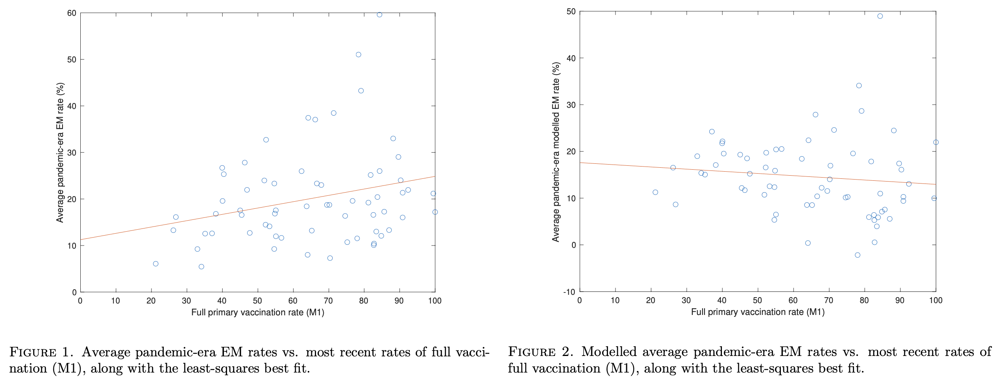
Kirsch claimed that Singapore was the country with the highest excess mortality in 2023: [https://x.com/stkirsch/status/1874371023048745288]
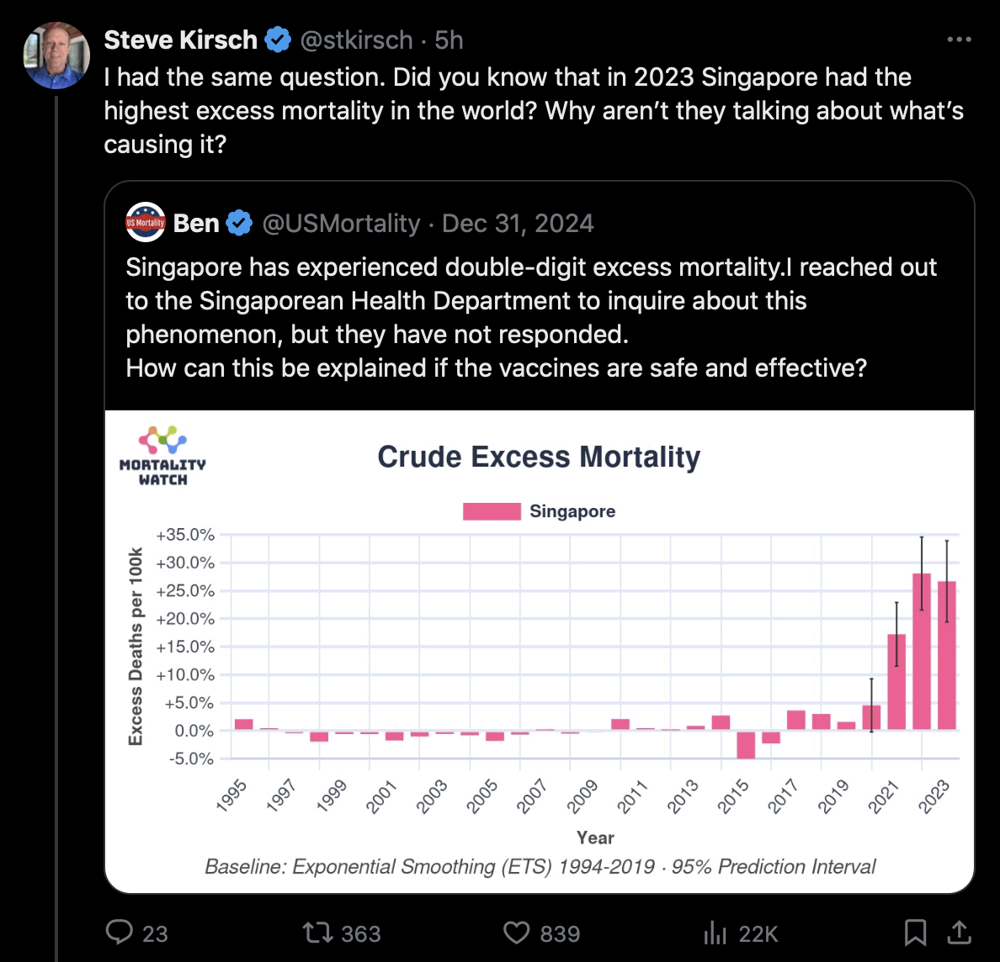
However at Mortality Watch Singapore doesn't have as high excess CMR percent in 2023 as Qatar, Macao, and Turkey:
t=fread("https://s3.mortality.watch/data/mortality/world_yearly.csv")
a=t[date==2023&!iso3c%like%"-",.(iso3c,pct=(cmr/cmr_baseline-1)*100)]
na.omit(a)[order(-pct)][1:16]
# iso3c pct
# 1: QAT 40.211640
# 2: MAC 26.718759
# 3: TUR 18.019009
# 4: SGP 16.584036 # Singapore has 4th highest excess CMR percent in 2023
# 5: TWN 13.045924
# 6: GLP 12.944331
# 7: HKG 12.094968
# 8: NOR 11.926244
# 9: THA 10.936049
# 10: AUS 10.927573
# 11: ECU 10.246085
# 12: GBRTENW 10.225523
# 13: IRL 9.575793
# 14: BRB 9.489875
# 15: SMR 9.445180
# 16: FIN 9.440650
Macao has about 260% excess deaths in January 2023 on OWID. The first big COVID wave in China was in December 2022 to January 2023 after the zero COVID policy was dropped.
Singapore had the first big COVID wave in October to November of 2021, so Singapore was still essentially in its second year of COVID for most of 2023. But if the excess deaths were caused by the vaccines then why was there were low excess deaths in the first half of 2021 when most people got vaccinated?
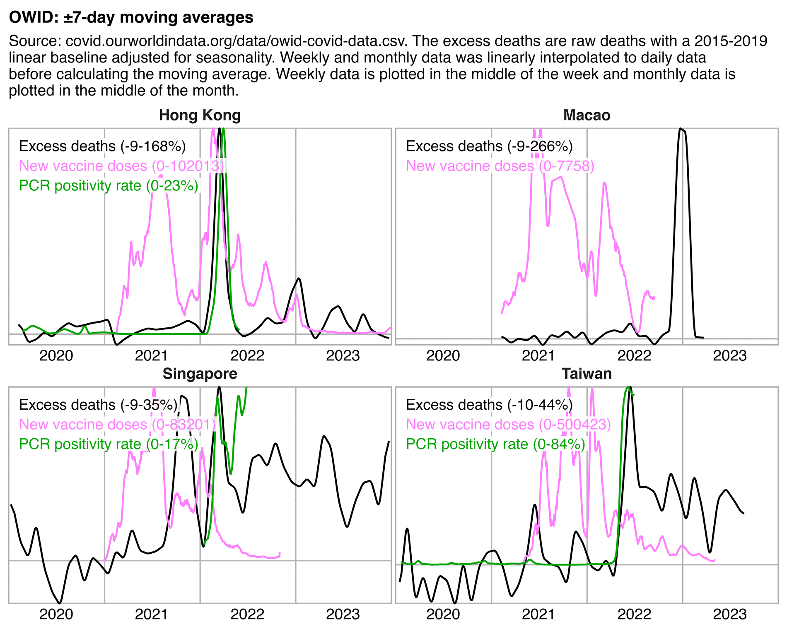
Clare Craig posted this tweet: [https://x.com/ClareCraigPath/status/1878842445896843711]
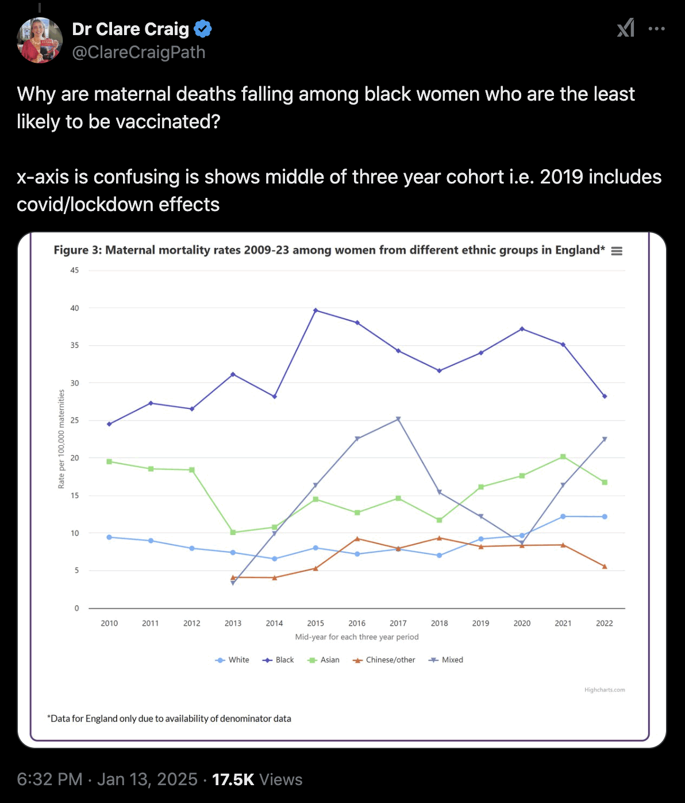
If the US if you look at the increase in pregnancy-related deaths between 2020 and 2021, it's low Asians who had a high percentage of vaccinated people. But it's high in Native Americans, Hispanics, and blacks, who had a lower percentage of vaccinated people:
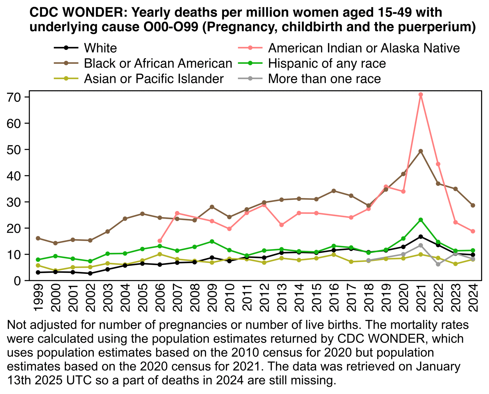
library(data.table);library(ggplot2)
t=fread("http://sars2.net/f/wonderpregnancyrace.csv")[cause%like%"Pregnancy"]
t[race=="Asian",race:="Asian or Pacific Islander"]
t[,race:=factor(race,strsplit("White
Black or African American
Asian or Pacific Islander
American Indian or Alaska Native
Hispanic of any race
More than one race","\\n")[[1]])]
p=t[hispanic=="Not Hispanic or Latino",.(x=year,z=race,y=dead/pop*1e6)]
p=rbind(p,t[hispanic=="Hispanic or Latino",.(y=sum(dead)/sum(pop)*1e6,z="Hispanic of any race"),.(x=year)])
xstart=1999;xend=2024;xbreak=xstart:xend
p=p[x%in%xstart:xend]
ylim=c(0,max(p$y)*1.02);ybreak=pretty(ylim,7)
ggplot(p,aes(x,y,z))+
geom_line(aes(color=z),linewidth=.6)+
geom_point(aes(color=z),size=1.1)+
labs(x=NULL,y=NULL,title="CDC WONDER: Yearly deaths per million women aged 15-49 with underlying cause O00-O99 (Pregnancy, childbirth and the puerperium)"|>stringr::str_wrap(68))+
scale_x_continuous(limits=c(xstart-.5,xend+.5),breaks=xbreak)+
scale_y_continuous(limits=ylim,breaks=ybreak)+
scale_color_manual(values=c("black",hsv(3/36,.5,.5),hsv(1/6,.8,.7),hsv(0,.5,1),hsv(12/36,.9,.7),"gray60"))+
coord_cartesian(clip="off",expand=F)+
guides(color=guide_legend(ncol=2,byrow=F))+
theme(axis.text=element_text(size=11,color="black"),
axis.text.x=element_text(angle=90,vjust=.5,hjust=1),
axis.text.y=element_text(margin=margin(,3)),
axis.ticks=element_line(linewidth=.4,color="black"),
axis.ticks.length.x=unit(0,"pt"),
axis.ticks.length.y=unit(4,"pt"),
legend.background=element_blank(),
legend.box.background=element_blank(),
legend.box.spacing=unit(0,"pt"),
legend.direction="vertical",
legend.justification="center",
legend.key=element_blank(),
legend.key.height=unit(13,"pt"),
legend.key.width=unit(26,"pt"),
legend.margin=margin(,,4),
legend.position="top",
legend.spacing.x=unit(2,"pt"),
legend.spacing.y=unit(0,"pt"),
legend.text=element_text(size=11,vjust=.5),
legend.title=element_blank(),
panel.background=element_blank(),
panel.border=element_rect(fill=NA,linewidth=.4),
panel.spacing=unit(2,"pt"),
plot.margin=margin(5,5,2,5),
plot.subtitle=element_text(margin=margin(,,5)),
plot.title=element_text(size=11.3,face=2,margin=margin(2,,5)))
ggsave("1.png",width=5.7,height=3.7,dpi=300*4)
sub="Not adjusted for number of pregnancies or number of live births. The mortality rates were calculated using the population estimates returned by CDC WONDER, which uses population estimates based on the 2010 census for 2020 but population estimates based on the 2020 census for 2021. The data was retrieved on January 13th 2025 UTC so a part of deaths in 2024 are still missing."
system(paste0("mogrify -trim 1.png;magick 1.png \\( -size `identify -format %w 1.png`x -font Arial -interline-spacing -3 -pointsize $[44*4] caption:'",gsub("'","'\\\\'",sub),"' -splice x80 \\) -append -resize 25% -bordercolor white -border 24 -colors 256 1.png"))
However the percentage increase in deaths from drug overdoses between 2020 and 2021 was also low for Asians. Some of the pregnancy-related deaths might be due to drug use (even though drug deaths had a bigger increase between 2019 and 2020 than between 2020 and 2021, but it was the other way around for pregnancy-related deaths):
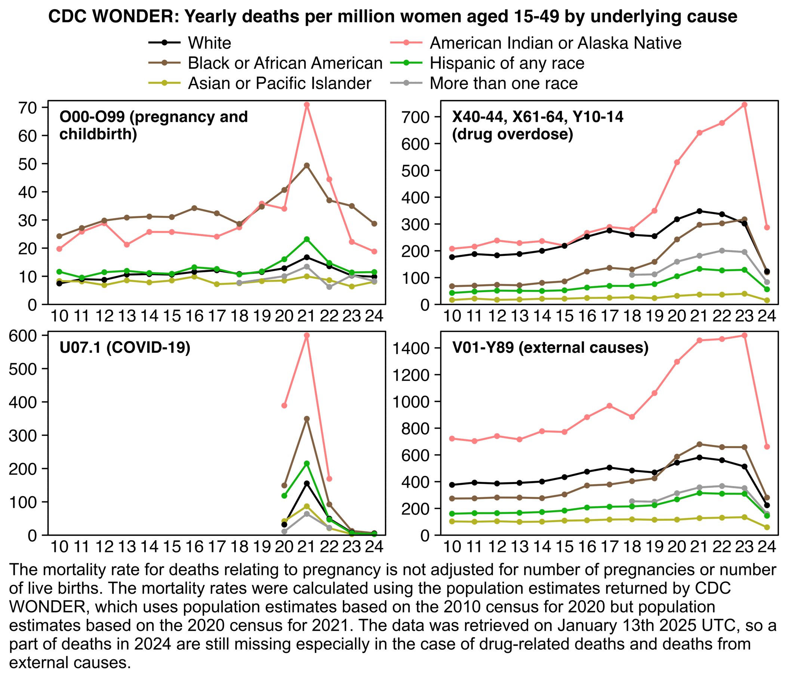
library(data.table);library(ggplot2)
t=fread("http://sars2.net/f/wonderpregnancyrace.csv")
as=t[,race%in%c("Asian or Pacific Islander","Asian","Native Hawaiian or Other Pacific Islander")&hispanic!="Hispanic or Latino"]
t1=t[as==T,.(dead=sum(dead),pop=sum(pop),race="Asian or Pacific Islander",hispanic="Not Hispanic or Latino"),.(cause,year)]
t=rbind(t1,t[as==F])
t[race=="Asian",race:="Asian or Pacific Islander"]
t[cause=="O00-O99 (Pregnancy, childbirth and the puerperium)",cause:="O00-O99 (pregnancy and childbirth)"]
t[,cause:=factor(cause,unique(cause))]
t[,race:=factor(race,strsplit("White
Black or African American
Asian or Pacific Islander
American Indian or Alaska Native
Hispanic of any race
More than one race","\\n")[[1]])]
p=t[hispanic!="Hispanic or Latino",.(y=sum(dead,na.rm=T)/sum(pop,na.rm=T)*1e6),.(x=year,cause,z=race)]
p=rbind(p,t[hispanic=="Hispanic or Latino",.(y=sum(dead)/sum(pop)*1e6,z="Hispanic of any race"),.(x=year,cause)])
xstart=2010;xend=2024;xbreak=xstart:xend
p=p[x%in%xstart:xend]
ylim=c(0,max(p$y)*1.02);ybreak=pretty(ylim,7)
ggplot(p,aes(x,y,z))+
facet_wrap(~cause,ncol=2,strip.position="top",dir="v",scales="free")+
geom_line(aes(color=z),linewidth=.6)+
geom_point(aes(color=z),size=1.1)+
geom_text(data=p[,max(y),cause],aes(label=stringr::str_wrap(cause,26),y=V1*.97),x=xstart,fontface=2,lineheight=.9,hjust=0,vjust=1,size=3.6)+
labs(x=NULL,y=NULL,title="CDC WONDER: Yearly deaths per million women aged 15-49 by underlying cause")+
scale_x_continuous(limits=c(xstart-.5,xend+.5),breaks=xbreak,labels=substr(xbreak,3,4))+
scale_y_continuous(limits=\(x)c(0,max(x)*1.02),breaks=\(x)pretty(x,7))+
scale_color_manual(values=c("black",hsv(3/36,.5,.5),hsv(1/6,.8,.7),hsv(0,.5,1),hsv(12/36,.9,.7),"gray60"))+
coord_cartesian(clip="off",expand=F)+
guides(color=guide_legend(ncol=2,byrow=F))+
theme(axis.text=element_text(size=11,color="black"),
axis.text.x=element_text(margin=margin(3)),
axis.text.y=element_text(margin=margin(,3)),
axis.ticks=element_line(linewidth=.4,color="black"),
axis.ticks.length.x=unit(0,"pt"),
axis.ticks.length.y=unit(4,"pt"),
legend.background=element_blank(),
legend.box.background=element_blank(),
legend.box.spacing=unit(0,"pt"),
legend.direction="vertical",
legend.justification="center",
legend.key=element_blank(),
legend.key.height=unit(13,"pt"),
legend.key.width=unit(26,"pt"),
legend.margin=margin(,,5),
legend.position="top",
legend.spacing.x=unit(2,"pt"),
legend.spacing.y=unit(0,"pt"),
legend.text=element_text(size=11,vjust=.5),
legend.title=element_blank(),
panel.background=element_blank(),
panel.border=element_rect(fill=NA,linewidth=.4),
panel.spacing=unit(4,"pt"),
plot.margin=margin(5,5,2,5),
plot.subtitle=element_text(margin=margin(,,5)),
plot.title=element_text(size=11.5,face=2,margin=margin(2,,4)),
strip.background=element_blank(),
strip.text=element_blank())
ggsave("1.png",width=7,height=5,dpi=300*4)
sub="The mortality rate for deaths relating to pregnancy is not adjusted for number of pregnancies or number of live births. The mortality rates were calculated using the population estimates returned by CDC WONDER, which uses population estimates based on the 2010 census for 2020 but population estimates based on the 2020 census for 2021. The data was retrieved on January 13th 2025 UTC, so a part of deaths in 2024 are still missing especially in the case of drug-related deaths and deaths from external causes."
system(paste0("mogrify -trim 1.png;magick 1.png \\( -size `identify -format %w 1.png`x -font Arial -interline-spacing -3 -pointsize $[45*4] caption:'",gsub("'","'\\\\'",sub),"' -splice x80 \\) -append -resize 25% -bordercolor white -border 24 -colors 256 1.png"))